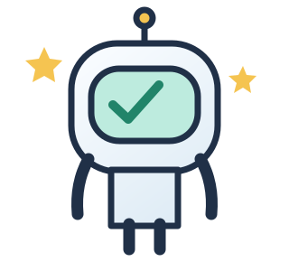

<!doctype html>
<html lang="he" dir="rtl"><head><meta charset="utf-8"><meta http-equiv="Cache-Control" content="no-cache, no-store, must-revalidate"><meta name="viewport" content="width=device-width,initial-scale=1"><title>המעבדה של מישה | Лаборатория Миши</title><link rel="stylesheet" href="tokens.css?v=20261124-learning-lab">
<link rel="stylesheet" href="base.css?v=20261124-learning-lab">
<link rel="stylesheet" href="home.css?v=20261124-learning-lab">
<link rel="stylesheet" href="task.css?v=20261124-learning-lab">
<link rel="stylesheet" href="puzzles.css?v=20261124-learning-lab">
<link rel="stylesheet" href="learning-games.css?v=20261124-learning-lab">
<link rel="stylesheet" href="atlas/atlas.css?v=20261124-learning-lab">
<link rel="stylesheet" href="session-flow.css?v=20261124-learning-lab">
<link rel="stylesheet" href="journey-passport.css?v=20261124-learning-lab">
</head><body>
<svg class="icon-sprite" aria-hidden="true" width="0" height="0" focusable="false"><defs>
<symbol id="i-play" viewBox="0 0 24 24"><path d="m8 5 11 7-11 7Z" fill="currentColor" stroke="none"/></symbol>
<symbol id="i-star" viewBox="0 0 24 24"><path d="m12 3 2.8 5.7 6.2.9-4.5 4.4 1.1 6.2-5.6-2.9-5.6 2.9 1.1-6.2L3 9.6l6.2-.9Z" fill="currentColor"/></symbol>
<symbol id="i-volume-1" viewBox="0 0 24 24"><path d="M11 5 6 9H2v6h4l5 4V5Z"/><path d="M15.5 8.5a5 5 0 0 1 0 7"/></symbol>
<symbol id="i-volume-2" viewBox="0 0 24 24"><path d="M11 5 6 9H2v6h4l5 4V5Z"/><path d="M15.5 8.5a5 5 0 0 1 0 7M18.5 5.5a9 9 0 0 1 0 13"/></symbol>
<symbol id="i-flask" viewBox="0 0 24 24"><path d="M9 3h6M10 3v6l-5.5 9.2A2 2 0 0 0 6.2 21h11.6a2 2 0 0 0 1.7-2.8L14 9V3"/><path d="M7.2 16h9.6"/></symbol>
<symbol id="i-flame" viewBox="0 0 24 24"><path d="M12 22c4.4 0 8-3 8-7.5 0-2.8-1.5-5.5-4.5-8.5 0 3-1.5 4.5-3 5.5.2-4-2-7-5-9.5.3 4-3.5 7-3.5 12.5C4 19 7.6 22 12 22Z"/><path d="M9.5 18.5c0-2 1-3.3 2.5-4.8 0 1.7.8 2.4 1.8 3.4.4.4.7 1 .7 1.6"/></symbol>
<symbol id="i-clock" viewBox="0 0 24 24"><circle cx="12" cy="12" r="9"/><path d="M12 7v5l3 2"/></symbol>
<symbol id="i-home" viewBox="0 0 24 24"><path d="m3 11 9-8 9 8"/><path d="M5 10v10h14V10M9 20v-6h6v6"/></symbol>
<symbol id="i-school" viewBox="0 0 24 24"><path d="m3 9 9-5 9 5-9 5-9-5Z"/><path d="M7 12v5c3 2 7 2 10 0v-5M21 10v6"/></symbol>
<symbol id="i-rocket" viewBox="0 0 24 24"><path d="M14 4c2.7-2.5 5.3-2.2 6-2-.2.7.5 3.3-2 6l-6.5 6.5-4-4L14 4Z"/><path d="m9 16-4 1 1-4M13 15l-1 4-3 3-1-5M7 11l-4 1 3-3 4-1"/><circle cx="16" cy="6" r="1.5"/></symbol>
<symbol id="i-compass" viewBox="0 0 24 24"><circle cx="12" cy="12" r="9"/><path d="m15.5 8.5-2 5-5 2 2-5 5-2Z"/></symbol>
<symbol id="i-search" viewBox="0 0 24 24"><circle cx="10.5" cy="10.5" r="6.5"/><path d="m15.5 15.5 5 5"/></symbol>
<symbol id="i-castle" viewBox="0 0 24 24"><path d="M4 21V9l3 2 3-2 2 2 2-2 3 2 3-2v12H4Z"/><path d="M4 6V3h4v5M16 8V3h4v6M9 21v-5h6v5"/></symbol>
<symbol id="i-waves" viewBox="0 0 24 24"><path d="M2 7c3 0 3-2 6-2s3 2 6 2 3-2 6-2 3 2 4 2M2 12c3 0 3-2 6-2s3 2 6 2 3-2 6-2 3 2 4 2M2 17c3 0 3-2 6-2s3 2 6 2 3-2 6-2 3 2 4 2"/></symbol>
<symbol id="i-gear" viewBox="0 0 24 24"><circle cx="12" cy="12" r="3"/><path d="M19.4 15a1.7 1.7 0 0 0 .3 1.9l.1.1-2.8 2.8-.1-.1a1.7 1.7 0 0 0-1.9-.3 1.7 1.7 0 0 0-1 1.6v.2h-4V21a1.7 1.7 0 0 0-1-1.6 1.7 1.7 0 0 0-1.9.3l-.1.1L4.2 17l.1-.1a1.7 1.7 0 0 0 .3-1.9A1.7 1.7 0 0 0 3 14H2.8v-4H3a1.7 1.7 0 0 0 1.6-1 1.7 1.7 0 0 0-.3-1.9L4.2 7 7 4.2l.1.1A1.7 1.7 0 0 0 9 4.6a1.7 1.7 0 0 0 1-1.6v-.2h4V3a1.7 1.7 0 0 0 1 1.6 1.7 1.7 0 0 0 1.9-.3l.1-.1L19.8 7l-.1.1a1.7 1.7 0 0 0-.3 1.9 1.7 1.7 0 0 0 1.6 1h.2v4H21a1.7 1.7 0 0 0-1.6 1Z"/></symbol>
<symbol id="i-telescope" viewBox="0 0 24 24"><path d="m5 7 11-4 2 5-11 4-2-5ZM14 10l4 10M10 11 7 20M9 16h8"/></symbol>
<symbol id="i-medal" viewBox="0 0 24 24"><circle cx="12" cy="15" r="5"/><path d="m9 10-3-7h4l2 4 2-4h4l-3 7M12 12v6"/></symbol>
<symbol id="i-trophy" viewBox="0 0 24 24"><path d="M8 4h8v5c0 4-2 6-4 6s-4-2-4-6V4Z"/><path d="M8 6H4v2c0 3 2 4 5 4M16 6h4v2c0 3-2 4-5 4M12 15v4M8 21h8"/></symbol>
<symbol id="i-sparkles" viewBox="0 0 24 24"><path d="m12 3 1.5 4.5L18 9l-4.5 1.5L12 15l-1.5-4.5L6 9l4.5-1.5L12 3ZM5 15l.8 2.2L8 18l-2.2.8L5 21l-.8-2.2L2 18l2.2-.8L5 15ZM19 13l.8 2.2 2.2.8-2.2.8L19 19l-.8-2.2L16 16l2.2-.8L19 13Z"/></symbol>
<symbol id="i-calculator" viewBox="0 0 24 24"><rect x="4" y="2" width="16" height="20" rx="3"/><path d="M7 6h10v4H7zM8 14h.01M12 14h.01M16 14h.01M8 18h.01M12 18h.01M16 18h.01"/></symbol>
<symbol id="i-puzzle" viewBox="0 0 24 24"><path d="M19 13h-2.2a2.8 2.8 0 1 0 0-4H19V5h-4V2.8a2.8 2.8 0 1 0-4 0V5H5v5h2.2a2.8 2.8 0 1 1 0 4H5v5h6v-2.2a2.8 2.8 0 1 1 4 0V19h4v-6Z"/></symbol>
<symbol id="i-shapes" viewBox="0 0 24 24"><circle cx="6.5" cy="17.5" r="3.5"/><rect x="13" y="14" width="7" height="7" rx="1"/><path d="m12 3 4 7H8l4-7Z"/></symbol>
<symbol id="i-crown" viewBox="0 0 24 24"><path d="m3 7 4 4 5-7 5 7 4-4-2 11H5L3 7ZM5 21h14"/></symbol>
<symbol id="i-route" viewBox="0 0 24 24"><circle cx="6" cy="18" r="2"/><circle cx="18" cy="6" r="2"/><path d="M8 18c7 0 2-12 8-12"/></symbol>
<symbol id="i-check" viewBox="0 0 24 24"><circle cx="12" cy="12" r="9"/><path d="m8 12 3 3 5-6"/></symbol>
</defs></svg>
<header><div class="brand"> <span id="brand"></span></div><div id="hud" class="hud"></div><nav id="nav"></nav></header><main id="app"></main><footer id="footer"></footer><script src="rewards.js?v=20261124-learning-lab"></script><script src="reading-support.js?v=20261124-learning-lab"></script><script src="mishi.js?v=20261124-learning-lab"></script><script src="sound.js?v=20261124-learning-lab"></script><script src="exercise-experience.js?v=20261124-learning-lab"></script><script src="reward-ui.js?v=20261124-learning-lab"></script><script src="puzzle-games.js?v=20261124-learning-lab"></script><script src="puzzle-ui.js?v=20261124-learning-lab"></script><script src="game-ui.js?v=20261124-learning-lab"></script><script src="learning-art.js?v=20261124-learning-lab"></script><script src="learning-games.js?v=20261124-learning-lab"></script><script src="learning-ui.js?v=20261124-learning-lab"></script><script src="atlas/questions.js?v=20261124-learning-lab"></script><script src="atlas/media.js?v=20261124-learning-lab"></script><script src="atlas/atlas.js?v=20261124-learning-lab"></script><script src="session-review.js?v=20261124-learning-lab"></script><script src="journey-passport.js?v=20261124-learning-lab"></script><script src="play-session.js?v=20261124-learning-lab"></script><script src="break-game.js?v=20261124-learning-lab"></script><script>
'use strict';
const P=(he,ru)=>({he,ru});
const T={name:P('המעבדה של מישה','Лаборатория Миши'),home:P('הבית','Главная'),teacher:P('אזור המורה','Для учителя'),welcome:P('מה נפצח היום, מישה?','Что разгадаем сегодня, Миша?'),intro:P('משחק לבחירה, או מסע בין כל 13 התחנות.','Выбери одну игру или отправься по всем 13 станциям.'),lab:P('מרחב קטן לרעיונות גדולים','Место для больших идей'),daily:P('האתגר היומי','Задание дня'),dailyDesc:P('חמש משימות · ארבעה עולמות · בקצב שלך','Пять задач · четыре мира · в твоём темпе'),level:P('רמה','Уровень'),check:P('בדיקה','Проверить'),hint:P('רמז','Подсказка'),skip:P('דלג','Пропустить'),next:P('למשימה הבאה','Следующая задача'),retry:P('עדיין לא. אפשר לנסות שוב, או לגלות רמז.','Пока не получилось. Попробуй ещё раз или открой подсказку.'),success:P('מצאת את הפתרון! הנה הדרך:','Ты нашёл решение! Вот как можно рассуждать:'),end:P('עוד מסע של גילוי הושלם','Ещё одно путешествие завершено'),endDesc:P('כל ניסיון ורמז הם חלק מהלמידה. אפשר להמשיך בפעם אחרת.','Каждая попытка и подсказка помогают учиться. Можно продолжить в другой раз.'),feel:P('איך הרגיש לך האתגר?','Как тебе показалась задача?'),easy:P('קל מדי','Слишком легко'),right:P('בדיוק מתאים','В самый раз'),hard:P('קשה ומעניין','Сложно, но интересно'),rounds:P('סבבים שהושלמו','Завершено занятий'),rate:P('הצלחה במשימות סגורות','Решено закрытых задач'),median:P('זמן פתרון חציוני בשניות','Медианное время в секундах'),hints:P('משימות עם רמזים','Задачи с подсказками'),reset:P('איפוס ההתקדמות','Сбросить прогресс'),confirm:P('למחוק את כל נתוני התרגול במכשיר הזה?','Удалить весь прогресс на этом устройстве?'),export:P('הורדת נתונים JSON','Скачать данные JSON'),note:P('הנתונים מתארים רק תרגול באפליקציה ונשמרים בדפדפן הזה.','Данные описывают только занятия в приложении и хранятся в этом браузере.'),history:P('היסטוריית משימות ושינויי רמה','История задач и уровней'),none:P('המסע עוד לפנינו. הנתונים יופיעו אחרי התרגול הראשון.','Всё впереди! Данные появятся после первых задач.'),open:P('השוואה לפתרון לדוגמה','Сравнить с примером решения'),self:P('זו משימת חקר: אין בדיקה אוטומטית של ההסבר. השווה את הרעיון שלך לדוגמה.','Это исследование: объяснение не проверяется автоматически. Сравни свою идею с примером.'),answer:P('התשובה שלך','Твой ответ'),choose:P('בחר תשובה לפני הבדיקה.','Выбери ответ перед проверкой.'),write:P('כתוב תשובה לפני הבדיקה.','Сначала напиши ответ.'),undo:P('החזרת המהלך','Отменить ход'),resume:P('המשך הסבב שנשמר','Продолжить занятие'),saveError:P('השמירה אינה זמינה בדפדפן הזה. אפשר להמשיך, אך הנתונים עלולים להימחק בסגירה.','Сохранение недоступно. Можно заниматься, но при закрытии данные могут пропасть.'),exit:P('הסבב יישמר להמשך','Занятие сохранится'),skills:P('שליטה לפי סוג משימה','Результаты по типам задач'),research:P('משימת מתמטיקאי','Исследование'),hintLevel:P('שלב עזרה','Шаг подсказки'),solved:P('נפתרו','Решено'),skipped:P('דולגו','Пропущено'),reviewed:P('משימות חקר — חשיבה פתוחה','Исследования — открытые задачи'),researchInfo:P('במשימת חקר מגלים כלל, בודקים טענה או מסבירים דרך. אין תשובה מספרית יחידה, ולכן היא אינה נבדקת אוטומטית ואינה מורידה מהציון.','В исследовании нужно открыть правило, проверить утверждение или объяснить способ. Единственного числового ответа нет, поэтому оно не проверяется автоматически и не снижает результат.'),saved:P('השינויים נשמרו','Изменения сохранены'),score:P('הציון שלי','Мой результат'),scoreNote:P('כל תרגיל נבדק אוטומטית לפי התשובה הסופית.','Каждое задание проверяется автоматически по окончательному ответу.'),whereNext:P('בחר את הסבב הבא','Выбери следующее занятие'),sameLevel:P('להתחיל סבב נוסף בקצב הזה','Начать ещё одно занятие в этом темпе'),harderLevel:P('להתחיל עכשיו אתגר קשה יותר','Сейчас начать более сложное занятие'),choiceSaved:P('הבחירה נשמרה לסבב הבא.','Выбор сохранён для следующего занятия.'),raiseHand:P('סיימתי — להרים יד','Я закончил — поднять руку'),handRaised:P('היד מורמת. המורה תראה שסיימת.','Рука поднята. Учитель увидит, что ты закончил.'),finishedAlert:P('מישה סיים תרגול ומחכה למורה','Миша закончил занятие и ждёт учителя'),acknowledge:P('ראיתי — להוריד את היד','Я вижу — опустить руку'),automaticLevels:P('אפשר לבחור רמת פתיחה לפני משחק חדש. בהמשך הרמה מתאימה את עצמה להצלחה של מישה.','Перед новой игрой можно выбрать начальный уровень. Дальше он подстраивается под успехи Миши.')};
const speechUI={enable:P('הפעלת הקראה','Включить озвучивание'),disable:P('כיבוי הקראה','Выключить озвучивание'),active:P('הקראה פעילה','Озвучивание включено'),unsupported:P('הקראה אינה זמינה בדפדפן הזה','Озвучивание недоступно в этом браузере'),options:P('אפשרויות','Варианты'),score:P('הציון הוא','Результат')};
const dailyThemes=[
{icon:'rocket',name:P('משימת חלל','Космическая миссия'),desc:P('מפצחים קודים כדי להגיע לכוכב הבא','Разгадываем коды, чтобы добраться до следующей планеты')},
{icon:'search',name:P('בלשי המספרים','Числовые детективы'),desc:P('כל פתרון חושף רמז חדש בתעלומה','Каждое решение открывает новую улику')},
{icon:'castle',name:P('הטירה הסודית','Тайный замок'),desc:P('חידות פותחות חדרים ושערים נסתרים','Задачи открывают скрытые комнаты и ворота')},
{icon:'waves',name:P('מסע במעמקים','Путешествие в глубины'),desc:P('צוללים אל תגליות, צורות ודפוסים','Погружаемся в открытия, фигуры и закономерности')},
{icon:'compass',name:P('משלחת החוקרים','Экспедиция исследователей'),desc:P('מנווטים בין ארבעה עולמות של חשיבה','Путешествуем по четырём мирам мышления')},
{icon:'gear',name:P('מפעל ההמצאות','Фабрика изобретений'),desc:P('כל תשובה מפעילה חלק נוסף במכונה','Каждый ответ запускает новую часть машины')}
];
const challengeNames={steady:P('בקצב המדויק שלך','Твой рабочий уровень'),stretch:P('אתגר עולה','Сложность растёт'),review:P('חיזוק חכם','Умное повторение')};
const domainTypePools={math:{low:['add','subtract','missing','sequence','estimate'],mid:['add','subtract','missing','multiply','sequence','fraction','story','estimate'],high:['pair','story','fraction','sequence','twoStep','divisibility','multi','always'],peak:['pair','story','twoStep','divisibility','combinations','algebra','multi','always']},logic:{low:['balance','sequence','deduce','oddone'],mid:['balance','sequence','match','deduce','oddone','visualSequence'],high:['match','deduce','visualSequence','ordering','code','truth']},geometry:{low:['shape','perimeter','area'],mid:['shape','perimeter','area','symmetry','angle','coordinates'],high:['perimeter','area','symmetry','angle','compose','hidden','rotation','coordinates']},chess:{low:['move','capture'],mid:['move','capture','threat','safe'],high:['move','capture','threat','safe','fork','mate']}};
const domains={math:{title:P('חשבון חכם','Умная математика'),desc:P('מספרים, חוקיות וחשיבה הפוכה','Числа, закономерности и обратные действия'),icon:'calculator',art:'assets/worlds/math.svg'},logic:{title:P('חידות היגיון','Логические задачи'),desc:P('רמזים קטנים, תגליות גדולות','Маленькие подсказки, большие открытия'),icon:'puzzle',art:'assets/worlds/logic.svg'},geometry:{title:P('גיאומטריה','Геометрия'),desc:P('מגלים את העולם דרך צורות','Открываем мир с помощью фигур'),icon:'shapes',art:'assets/worlds/geometry.svg'},chess:{title:P('שחמט','Шахматы'),desc:P('עוצרים, מתבוננים וחושבים קדימה','Смотрим внимательно и думаем вперёд'),icon:'crown',art:'assets/worlds/chess.svg'}};
const stages=[P('חימום','Разминка'),P('מוצאים את הקצב','В своём темпе'),P('זמן לחשוב','Время подумать'),P('הפתעה קטנה','Небольшой сюрприз'),P('אתגר שיא','Главная задача')];
const types={add:P('חיבור','Сложение'),subtract:P('חיסור','Вычитание'),missing:P('חשיבה הפוכה','Обратные действия'),multiply:P('כפל וחילוק','Умножение и деление'),sequence:P('חוקיות','Закономерности'),fraction:P('שברים','Дроби'),estimate:P('אומדן והשוואה','Оценка и сравнение'),story:P('בעיות רב־שלביות','Задачи в несколько действий'),twoStep:P('משוואה דו־שלבית','Уравнение в два шага'),divisibility:P('התחלקות','Делимость'),combinations:P('ספירה שיטתית','Систематический подсчёт'),algebra:P('אלגברה מוקדמת','Начальная алгебра'),pair:P('שני תנאים','Два условия'),multi:P('ספירת זוגות','Подсчёт пар'),always:P('זוגי או אי־זוגי','Чётное или нечётное'),research:P('חקר והכללה','Исследование'),balance:P('מאזניים','Весы'),match:P('גפרורים','Спички'),deduce:P('הסקת מסקנות','Логические выводы'),oddone:P('יוצא דופן','Лишний объект'),visualSequence:P('רצף חזותי','Визуальная последовательность'),ordering:P('סדר ותנאים','Порядок и условия'),code:P('פענוח קוד','Расшифровка кода'),truth:P('אמת ושקר','Истина и ложь'),shape:P('צלעות וקודקודים','Стороны и вершины'),perimeter:P('היקף','Периметр'),area:P('שטח','Площадь'),symmetry:P('סימטריה','Симметрия'),angle:P('זוויות','Углы'),compose:P('הרכבת צורות','Составление фигур'),hidden:P('צורות בתוך ציור','Фигуры в рисунке'),rotation:P('סיבוב','Поворот'),coordinates:P('מיקום ותנועה','Координаты и движение'),identity:P('זיהוי כלי','Узнать фигуру'),move:P('תנועת כלים','Ходы фигур'),capture:P('לכידה','Взятие'),threat:P('כלי תחת איום','Фигура под угрозой'),safe:P('מהלך בטוח','Безопасный ход'),fork:P('מזלג','Вилка'),mate:P('מט במהלך אחד','Мат в один ход')};
const badgeDefs={first:{icon:'rocket',name:P('יציאה למסע','Начало путешествия')},ten:{icon:'telescope',name:P('עשר תגליות','Десять открытий')},streak:{icon:'flame',name:P('רצף של 5','Серия из 5')},explorer:{icon:'compass',name:P('חוקר ארבעה עולמות','Исследователь четырёх миров')},century:{icon:'trophy',name:P('100 נקודות חקר','100 очков исследования')}};
for(const kind of PuzzleGames.kinds)types[kind]=PuzzleGames.catalog[kind].name;
const KEY='misha-lab-v1';
function fresh(){return {version:1,contentVersion:2,lang:'both',levels:{math:3,logic:1,geometry:1,chess:1},mastery:{},history:[],rounds:[],recent:[],recentTypes:[],dailyDates:[],session:null,xp:0,currentStreak:0,bestStreak:0,badges:[],showClock:true,readAloud:false,sound:true,helpMode:'hebrewFirst',shelfTab:'thinking',puzzleAuto:true,startDifficulty:null};}
let data=fresh(),storageOK=true;try{const raw=JSON.parse(localStorage.getItem(KEY)||'null');if(raw&&raw.version===1&&raw.levels&&Array.isArray(raw.history)&&Array.isArray(raw.rounds)){data={...fresh(),...raw};data.contentVersion=2;for(const d in domains)data.levels[d]=Math.max(1,Math.min(10,Number(data.levels[d])||1));if(!['he','ru','both'].includes(data.lang))data.lang='both';if(data.startDifficulty!=null)data.startDifficulty=Number.isInteger(data.startDifficulty)&&data.startDifficulty>=1&&data.startDifficulty<=10?data.startDifficulty:null;}}catch(e){storageOK=false;}
if(!['always','tap','afterMiss','hebrewFirst'].includes(data.helpMode))data.helpMode='hebrewFirst';
window.Rewards?.migrate(data);
let screen='home',session=data.session,feedback=null,autoNextTimer=null,hudTimer=null,newBadge=null,narratedTarget=null,narratedState='';
const speechSupported='speechSynthesis' in window&&'SpeechSynthesisUtterance' in window;
function saveProgress(){data.session=session?.journey?data.expedition?.previousSession||null:session;try{localStorage.setItem(KEY,JSON.stringify(data));}catch(e){storageOK=false;}}
function rank(){return window.Rewards?Rewards.rank(data):1;}
function formatTime(ms){let total=Math.max(0,Math.floor(ms/1000)),m=Math.floor(total/60),s=total%60;return `${String(m).padStart(2,'0')}:${String(s).padStart(2,'0')}`;}
function unlockBadges(){const earned=window.Rewards?Rewards.unlockBadges(data):[];newBadge=earned[0]||null;return newBadge;}
function ico(name,cls=''){return `<svg class="ui-icon ${cls}" aria-hidden="true" focusable="false"><use href="#i-${name}"></use></svg>`;}
function mapHotspotsHTML(){return `<div class="map-hotspots" role="group" aria-label="${esc(text(P('בחירת נושא מהמפה','Выбор темы на карте')))}">${Object.entries(domains).map(([d,v])=>`<button class="island-hotspot" data-island="${d}" data-track="${d}" aria-label="${esc(text(P(`פתיחת מסלול ${v.title.he}, רמה ${data.levels[d]}`,`Открыть маршрут «${v.title.ru}», уровень ${data.levels[d]}`)))}"><span class="hotspot-icon">${ico(v.icon)}</span><span class="hotspot-copy">${bi(v.title)}<small>${bi(P(`רמה ${data.levels[d]}`,`Уровень ${data.levels[d]}`))}</small></span></button>`).join('')}</div>`;}
function badgeHTML(limit=5){let ids=Object.keys(badgeDefs).slice(0,limit);return `<div class="badges">${ids.map(id=>{let b=badgeDefs[id],owned=data.badges.includes(id);return `<div class="achievement ${owned?'':'locked'}" title="${esc(text(b.name))}"><span class="medal">${ico(b.icon)}</span><span>${bi(b.name)}</span></div>`;}).join('')}</div>`;}
function updateHud(){let clock=document.getElementById('runClock');if(clock&&session?.runStartedAt)clock.textContent=data.showClock===false?'••:••':formatTime(Date.now()-session.runStartedAt);}
function startHudClock(){clearInterval(hudTimer);updateHud();if(screen==='task'&&session?.runStartedAt)hudTimer=setInterval(updateHud,1000);}
function esc(v){return String(v).replace(/[&<>"']/g,c=>({'&':'&amp;','<':'&lt;','>':'&gt;','"':'&quot;',"'":'&#39;'}[c]));}
function uiLang(){return data.lang==='ru'?'ru':'he';}
function uiTip(p){return esc(data.lang==='both'?`${p.he} · ${p.ru}`:text(p));}
function ui(p){if(!p)return '';const lang=uiLang();return `<span class="ui-label" lang="${lang}" dir="${lang==='he'?'rtl':'ltr'}" title="${uiTip(p)}">${esc(p[lang])}</span>`;}
function bi(p){if(!p)return '';const showRu=data.lang!=='he'&&(!window.ReadingSupport||ReadingSupport.visible());return `<span class="bi">${data.lang!=='ru'?`<span class="bi__he he" lang="he" dir="rtl">${esc(p.he)}</span>`:''}${showRu?`<span class="bi__ru ru" lang="ru" dir="ltr">${esc(p.ru)}</span>`:''}</span>`;}
function text(p){return data.lang==='ru'?p.ru:p.he;}
function btn(id,p,cls=''){return `<button data-action="${id}" class="${cls}">${ui(p)}</button>`;}
function speechVoice(lang){let prefix=lang.slice(0,2).toLowerCase(),voices=window.speechSynthesis.getVoices?.()||[];return voices.find(v=>v.lang?.toLowerCase().startsWith(prefix))||null;}
function speakParts(parts){if(!data.readAloud||!speechSupported||!parts.length)return;window.speechSynthesis.cancel();let languages=data.lang==='both'?(!window.ReadingSupport||ReadingSupport.visible()?['he','ru']:['he']):[data.lang];for(const code of languages){let words=parts.map(part=>typeof part==='string'?part:part?.[code]).filter(Boolean).join('. ');if(!words.trim())continue;let utterance=new SpeechSynthesisUtterance(words);utterance.lang=code==='ru'?'ru-RU':'he-IL';utterance.rate=.92;utterance.pitch=1.02;if(window.ReadingSupport?.bindSpeech)ReadingSupport.bindSpeech(utterance,code,words);let voice=speechVoice(utterance.lang);if(voice)utterance.voice=voice;window.speechSynthesis.speak(utterance);}}
function questionSpeech(q){let parts=[q.prompt];if(q.display)parts.push(q.display);if(q.mode==='options'&&q.options?.length)parts.push(P(`${speechUI.options.he}: ${q.options.map(o=>o.he).join(', ')}`,`${speechUI.options.ru}: ${q.options.map(o=>o.ru).join(', ')}`));return parts;}
function feedbackSpeech(q){if(!feedback&&q.hint)return [q.hints[q.hint-1]];let message=feedback==='success'?T.success:feedback==='open'?T.self:feedback==='skip'?T.skipped:T[feedback];let parts=message?[message]:[];if(['success','open','skip'].includes(feedback))parts.push(q.hints[2]);else if(q.hint)parts.push(q.hints[q.hint-1]);return parts;}
function narrateCurrent(force=false){if(!data.readAloud||!speechSupported)return;if((screen==='task'||PlaySession.isCore())&&session?.task){let q=session.task,isNew=force||narratedTarget!==q,state=isNew?'question':feedback?`feedback:${feedback}:${q.attempts}:${q.hint}:${q.finished}`:q.hint?`hint:${q.hint}`:'question';if(!force&&narratedTarget===q&&narratedState===state)return;narratedTarget=q;narratedState=state;speakParts(isNew?questionSpeech(q):feedbackSpeech(q));return;}let target=screen==='end'?`end:${session?.roundIndex??''}`:screen;if(!force&&narratedTarget===target)return;narratedTarget=target;narratedState='screen';if(screen==='home')speakParts([T.welcome,T.intro]);else if(screen==='end')speakParts([T.end,P(`${speechUI.score.he} ${currentRound()?.score??roundScore(session.results)} מתוך 100`,`${speechUI.score.ru}: ${currentRound()?.score??roundScore(session.results)} из 100`)]);else if(screen==='teacher')speakParts([T.teacher]);}
function rand(a,b){return a+Math.floor(Math.random()*(b-a+1));}function pick(a){return a[rand(0,a.length-1)];}
function dayKey(date=new Date()){let d=date instanceof Date?date:new Date(`${date}T12:00:00`);return `${d.getFullYear()}-${String(d.getMonth()+1).padStart(2,'0')}-${String(d.getDate()).padStart(2,'0')}`;}
function dayNumber(key=dayKey()){let [y,m,d]=key.split('-').map(Number);return Math.floor(Date.UTC(y,m-1,d)/86400000);}
function themeForDay(key=dayKey()){return dailyThemes[((dayNumber(key)%dailyThemes.length)+dailyThemes.length)%dailyThemes.length];}
function themeIndexForDay(key=dayKey()){return dailyThemes.indexOf(themeForDay(key));}
function dailyOrder(key=dayKey(),roundOffset=0){let keys=Object.keys(domains),shift=(dayNumber(key)+roundOffset)%keys.length;return [...keys.slice(shift),...keys.slice(0,shift)];}
function eligibleTypes(domain,level){let pools=domainTypePools[domain];if(domain==='math')return level<3?pools.low:level<5?pools.mid:level<8?pools.high:pools.peak;if(domain==='logic')return level<3?pools.low:level<6?pools.mid:pools.high;if(domain==='geometry')return level<3?pools.low:level<6?pools.mid:pools.high;return level<3?pools.low:level<7?pools.mid:pools.high;}
function weakestType(domain,level){let candidates=eligibleTypes(domain,level),ranked=candidates.map(type=>{let m=data.mastery[`${domain}:${type}`];return {type,score:m?m.solved/Math.max(1,m.attempted)+Math.min(m.attempted,5)*.02:-1};}).sort((a,b)=>a.score-b.score);return ranked[0]?.type;}
function weakestDomain(){let ranked=Object.keys(domains).map(domain=>{let recent=data.history.filter(r=>r.domain===domain&&!r.open).slice(-8),accuracy=recent.length?recent.filter(r=>r.correct).length/recent.length:-1,hints=recent.reduce((n,r)=>n+(r.hints||0),0);return {domain,score:accuracy-hints*.03+recent.length*.005};}).sort((a,b)=>a.score-b.score);return ranked[0].domain;}
function challengePlan(domain,index=data.history.length){let recent=data.history.filter(r=>r.domain===domain&&!r.open).slice(-3),struggling=recent.length>=2&&recent.filter(r=>!r.correct||r.hints>=2).length>=2;if(struggling)return {band:'review',offset:-1,forced:weakestType(domain,data.levels[domain])};let slot=((index%20)+20)%20;if(slot<12)return {band:'steady',offset:0,forced:null};if(slot<17)return {band:'stretch',offset:1,forced:null};return {band:'review',offset:-1,forced:weakestType(domain,data.levels[domain])};}
function make(domain,level,type,title,prompt,answer,display,hints,extra={}){return {domain,level,type,title,prompt,answer,display,hints,mode:'number',...extra};}
function steps(a,b,c){return [a,b,c];}
function generateMath(l,forced){let scale=l<3?1:l<5?2:l<8?4:8,a=rand(12*scale,39*scale),b=rand(6*scale,18*scale),n=rand(3,Math.min(15,6+l));let pool=l<3?['add','subtract','missing','sequence','estimate']:l<5?['add','subtract','missing','multiply','sequence','fraction','story','estimate']:l<8?['pair','story','fraction','sequence','twoStep','divisibility','multi','always']:['pair','story','twoStep','divisibility','combinations','algebra','multi','always'];let type=forced==='research'?'pair':forced||pick(pool);
if(type==='add')return make('math',l,type,types.add,P('חשב את הסכום. אפשר לפרק לעשרות וליחידות.','Найди сумму. Можно отдельно сложить десятки и единицы.'),a+b,`${a} + ${b} = ?`,steps(P('איך אפשר להגיע לעשרת הבאה?','Как дойти до следующего десятка?'),P('פרק את המספר השני לשני חלקים נוחים.','Раздели второе число на удобные части.'),P(`${a} ועוד ${b} הם ${a+b}.`,`${a} плюс ${b} равно ${a+b}.`)));
if(type==='subtract'){let high=a+b;return make('math',l,type,types.subtract,P('מצא את ההפרש. חפש דרך חכמה במקום לספור לאחור.','Найди разность. Ищи удобный способ, а не считай назад.'),a,`${high} − ${b} = ?`,steps(P('אפשר לפרק את המספר שמחסרים לעשרות וליחידות.','Можно разложить вычитаемое на десятки и единицы.'),P(`חפש כמה צריך להוסיף ל־${b} כדי להגיע ל־${high}.`,`Найди, сколько нужно прибавить к ${b}, чтобы получить ${high}.`),P(`${high} פחות ${b} הם ${a}.`,`${high} минус ${b} равно ${a}.`)));}
if(type==='missing')return make('math',l,type,types.missing,P('מצא את המספר החסר.','Найди пропущенное число.'),a,`□ + ${b} = ${a+b}`,steps(P('איזו פעולה הפוכה לחיבור?','Какое действие обратное сложению?'),P(`החסר ${b} מהסכום.`,`Вычти ${b} из суммы.`),P(`${a+b} פחות ${b} הם ${a}.`,`${a+b} минус ${b} равно ${a}.`)));
if(type==='multiply')return make('math',l,type,types.multiply,P('מצא את המספר החסר.','Найди пропущенное число.'),n,`${n*b} ÷ ${b} = □`,steps(P('חשוב על קבוצות שוות.','Подумай об одинаковых группах.'),P(`כמה קבוצות של ${b} יש ב־${n*b}?`,`Сколько групп по ${b} в числе ${n*b}?`),P(`${b} כפול ${n} הם ${n*b}, לכן התשובה ${n}.`,`${b} умножить на ${n} — это ${n*b}. Ответ: ${n}.`)));
if(type==='sequence'){let d=rand(2,4+l),start=rand(1,8+l),curve=l>=6?rand(1,3):0,arr=Array.from({length:4},(_,i)=>start+d*i+curve*i*i),ans=start+d*4+curve*16;return make('math',l,type,types.sequence,P('איזה מספר ממשיך את החוקיות?','Какое число продолжит закономерность?'),ans,arr.join(' , ')+' , ?',steps(P('בדוק את ההפרשים בין שכנים.','Посмотри на разности соседних чисел.'),curve?P(`גם ההפרשים משתנים: בכל צעד הם גדלים ב־${curve*2}.`,`Разности тоже меняются: каждый раз увеличиваются на ${curve*2}.`):P(`בכל צעד מוסיפים ${d}.`,`На каждом шаге прибавляем ${d}.`),P(`המספר הבא לפי הכלל הזה הוא ${ans}.`,`По этому правилу следующее число — ${ans}.`)));}
if(type==='fraction'){let den=pick([2,3,4]),num=rand(1,den-1),whole=den*rand(3,9);return make('math',l,type,types.fraction,P(`בקופסה ${whole} חרוזים. ${num}/${den} מהם כחולים. כמה חרוזים כחולים?`,`В коробке ${whole} бусин. Синие составляют ${num}/${den} всех бусин. Сколько синих?`),whole/den*num,`${num}/${den} × ${whole} = ?`,steps(P('מצא תחילה חלק אחד שווה.','Сначала найди одну равную часть.'),P(`חלק ${whole} ב־${den}, ואז כפול ${num}.`,`Раздели ${whole} на ${den}, затем умножь на ${num}.`),P(`חלק אחד הוא ${whole/den}. לכן יש ${whole/den*num} חרוזים כחולים.`,`Одна часть — ${whole/den}. Значит, синих бусин ${whole/den*num}.`)));}
if(type==='estimate'){let x=rand(24,89),y=rand(14,76),roundedX=Math.round(x/10)*10,roundedY=Math.round(y/10)*10,estimate=roundedX+roundedY,choices=[estimate,estimate+20,estimate-20],correct=0;return make('math',l,type,types.estimate,P(`עגל כל מספר לעשרת הקרובה ואז חבר: מהו האומדן ל־${x} + ${y}?`,`Округли каждое число до десятков и сложи: чему примерно равно ${x} + ${y}?`),correct,`${x} + ${y} ≈ ?`,steps(P('עגל כל מספר לעשרת הקרובה.','Округли каждое число до ближайшего десятка.'),P(`${x} מתעגל ל־${roundedX}, ו־${y} מתעגל ל־${roundedY}.`,`${x} округляется до ${roundedX}, а ${y} — до ${roundedY}.`),P(`${roundedX} + ${roundedY} = ${estimate}, ולכן זהו האומדן.`,`${roundedX} + ${roundedY} = ${estimate}, поэтому это искомая оценка.`)),{mode:'options',options:choices.map(v=>P(String(v),String(v)))});}
if(type==='story'){let packs=rand(3,6),each=rand(4,9),give=rand(2,9),stories=[P(`מישה הכין ${packs} שקיות עם ${each} מדבקות בכל שקית, ונתן לחבר ${give} מדבקות. כמה נשארו לו?`,`Миша приготовил ${packs} пакетика по ${each} наклеек и подарил другу ${give} наклеек. Сколько осталось?`),P(`בחללית יש ${packs} מגירות, ובכל מגירה ${each} גבישי אנרגיה. הצוות השתמש ב־${give}. כמה גבישים נשארו?`,`На корабле ${packs} отсеков, в каждом по ${each} энергетических кристаллов. Команда использовала ${give}. Сколько осталось?`),P(`הבלשים רשמו ${packs} קופסאות עם ${each} רמזים בכל קופסה. אחר כך הסירו ${give} רישומים כפולים. כמה רישומי רמזים נשארו?`,`Детективы записали ${packs} коробок по ${each} улик. Затем они удалили ${give} повторных записей. Сколько записей об уликах осталось?`),P(`במפעל פועלות ${packs} מכונות, וכל אחת יצרה ${each} גלגלי שיניים. ${give} גלגלים נשלחו לתיקון. כמה נשארו?`,`На фабрике ${packs} машин изготовили по ${each} шестерёнок. ${give} отправили в ремонт. Сколько осталось?`),P(`במשלחת יש ${packs} תרמילים, ובכל תרמיל ${each} דגימות. החוקרים כבר בדקו ${give}. כמה דגימות נשארו לבדיקה?`,`В экспедиции ${packs} рюкзаков по ${each} образцов. Исследователи уже проверили ${give}. Сколько осталось проверить?`)];return make('math',l,type,types.story,pick(stories),packs*each-give,`${packs} × ${each} − ${give} = ?`,steps(P('כמה פריטים היו לפני שהוציאו חלק מהם?','Сколько предметов было до того, как часть убрали?'),P('כפול את מספר הקבוצות בכמות בכל קבוצה, ואז החסר.','Умножь число групп на количество в каждой, затем вычти.'),P(`${packs*each} פחות ${give} הם ${packs*each-give}.`,`${packs*each} минус ${give} равно ${packs*each-give}.`)));}
if(type==='twoStep'){let x=rand(4,12+l),m=rand(2,Math.min(8,l+2)),c=rand(3,15+l),total=x*m+c;return make('math',l,type,types.twoStep,P('מצא את המספר החסר. דרושים שני צעדים הפוכים.','Найди неизвестное число. Нужны два обратных действия.'),x,`${m} × □ + ${c} = ${total}`,steps(P('איזו פעולה נעשתה אחרונה? בטל אותה ראשונה.','Какое действие было последним? Сначала отмени его.'),P(`החסר ${c}, ואז חלק ב־${m}.`,`Вычти ${c}, затем раздели на ${m}.`),P(`(${total} − ${c}) ÷ ${m} = ${x}`,`(${total} − ${c}) ÷ ${m} = ${x}`)));}
if(type==='divisibility'){let divisor=pick(l>=8?[3,4,6,9]:[2,3,5]),base=divisor*rand(8,30),options=[base,base+1,base+divisor+1],correct=0;return make('math',l,type,types.divisibility,P(`איזה מספר מתחלק ב־${divisor} ללא שארית?`,`Какое число делится на ${divisor} без остатка?`),correct,'',steps(P('חפש מספר שאפשר לחלק לקבוצות שוות.','Ищи число, которое можно разделить на равные группы.'),P(`בדוק את כפולות ${divisor}.`,`Проверь числа, кратные ${divisor}.`),P(`${base} = ${divisor} × ${base/divisor}, ולכן הוא מתחלק בדיוק.`,`${base} = ${divisor} × ${base/divisor}, поэтому оно делится без остатка.`)),{mode:'options',options:options.map(v=>P(String(v),String(v)))});}
if(type==='combinations'){let kids=rand(4,Math.min(9,l+1)),answer=kids*(kids-1)/2;return make('math',l,type,types.combinations,P(`${kids} חוקרים נפגשים, וכל זוג לוחץ יד פעם אחת. כמה לחיצות יד יהיו?`,`Встретились ${kids} исследователей, и каждая пара пожала руки один раз. Сколько будет рукопожатий?`),answer,'',steps(P('צייר נקודה לכל חוקר וחבר כל זוג פעם אחת.','Нарисуй точку для каждого исследователя и соедини каждую пару один раз.'),P(`הראשון לוחץ ${kids-1} ידיים, הבא ${kids-2}, וכך הלאה.`,`Первый пожимает ${kids-1} рук, следующий ${kids-2} и так далее.`),P(`${kids-1} + ${kids-2} + … + 1 = ${answer}.`,`${kids-1} + ${kids-2} + … + 1 = ${answer}.`)));}
if(type==='algebra'){let x=rand(3,16),m=rand(2,6),c=rand(2,12),total=m*x-c;return make('math',l,type,types.algebra,P('פתור את המשוואה ומצא את x.','Реши уравнение и найди x.'),x,`${m}x − ${c} = ${total}`,steps(P('הוסף אותו מספר לשני צדי המשוואה.','Прибавь одно и то же число к обеим частям уравнения.'),P(`הוסף ${c}, ואז חלק ב־${m}.`,`Прибавь ${c}, затем раздели на ${m}.`),P(`x = (${total} + ${c}) ÷ ${m} = ${x}`,`x = (${total} + ${c}) ÷ ${m} = ${x}`)));}
if(type==='pair'){let x=rand(12,30),y=rand(3,11);return make('math',l,type,types.pair,P(`סכום שני מספרים הוא ${x+y}, וההפרש הוא ${x-y}. מה המספר הגדול?`,`Сумма двух чисел равна ${x+y}, а разность — ${x-y}. Найди большее число.`),x,`a + b = ${x+y}     a − b = ${x-y}`,steps(P('מה יקרה אם נחבר את הסכום ואת ההפרש?','Что получится, если сложить сумму и разность?'),P('נקבל פעמיים את המספר הגדול.','Получится удвоенное большее число.'),P(`(${x+y} + ${x-y}) ÷ 2 = ${x}`,`(${x+y} + ${x-y}) ÷ 2 = ${x}`)));}
if(type==='multi'){let target=rand(18,40),answer=Math.floor(target/2);return make('math',l,type,types.multi,P(`כמה זוגות של מספרים שלמים חיוביים שסכומם ${target} אפשר ליצור? זוג בסדר הפוך נספר פעם אחת. מותר ששני המספרים יהיו שווים.`,`Сколько пар положительных целых чисел с суммой ${target} можно составить? Пара в обратном порядке считается один раз. Числа могут быть равны.`),answer,`a + b = ${target}`,steps(P('התחל בזוג שבו המספר הקטן הוא 1.','Начни с пары, в которой меньшее число равно 1.'),P('הגדל את המספר הקטן ב־1 עד שהוא יגיע למחצית הסכום.','Увеличивай меньшее число на 1 до половины суммы.'),P(`המספר הקטן יכול להיות מ־1 עד ${answer}. לכן יש ${answer} זוגות.`,`Меньшее число может быть от 1 до ${answer}. Значит, всего ${answer} пар.`)));}
if(type==='always'){let x=rand(2,12)*2+1,y=rand(2,12)*2+1;return make('math',l,type,types.always,P(`מה נכון לגבי הסכום של ${x} ו־${y}?`,`Что верно о сумме чисел ${x} и ${y}?`),0,`${x} + ${y}`,steps(P('שני המספרים אי־זוגיים.','Оба числа нечётные.'),P('בכל מספר אי־זוגי נשארת יחידה אחת אחרי יצירת זוגות.','В каждом нечётном числе после составления пар остаётся одна единица.'),P(`${x} + ${y} = ${x+y}. שתי היחידות יוצרות זוג, ולכן הסכום זוגי.`,`${x} + ${y} = ${x+y}. Две оставшиеся единицы образуют пару, поэтому сумма чётная.`)),{mode:'options',options:[P('הסכום זוגי','Сумма чётная'),P('הסכום אי־זוגי','Сумма нечётная'),P('הסכום שווה לאחד המחוברים','Сумма равна одному из слагаемых')]});}
return generateMath(l,'pair');}

const SEG=[[1,1,1,0,1,1,1],[0,0,1,0,0,1,0],[1,0,1,1,1,0,1],[1,0,1,1,0,1,1],[0,1,1,1,0,1,0],[1,1,0,1,0,1,1],[1,1,0,1,1,1,1],[1,0,1,0,0,1,0],[1,1,1,1,1,1,1],[1,1,1,1,0,1,1]];
function buildMatchBank(){let bank=[];for(let a=0;a<10;a++)for(let b=0;b<10;b++)for(let c=0;c<10;c++){if(a+b===c)continue;let digits=[a,b,c],initial=digits.flatMap(d=>SEG[d]),solutions=[];for(let from=0;from<21;from++)if(initial[from])for(let to=0;to<21;to++)if(!initial[to]){let board=initial.slice();board[from]=0;board[to]=1;let next=[0,1,2].map(i=>SEG.findIndex(s=>s.every((v,j)=>v===board[i*7+j])));if(next.every(n=>n>=0)&&next[0]+next[1]===next[2])solutions.push(next);}if(solutions.length)bank.push({digits,solution:solutions[0]});}return bank;}
const MATCH_BANK=buildMatchBank();
function generateLogic(l,forced){let type=forced||pick(eligibleTypes('logic',l));if(type==='match'){let puzzle=pick(MATCH_BANK),digits=puzzle.digits,solution=puzzle.solution;return make('logic',l,type,types.match,P('העבר גפרור אחד כדי לתקן את המשוואה: בחר גפרור חום ואז מקום אפור.','Переложи одну спичку, чтобы равенство стало верным: нажми на коричневую спичку, затем на серое место.'),null,'',steps(P('אפשר לשנות ספרה אחת או שתי ספרות באותו מהלך.','За один ход можно изменить одну или две цифры.'),P('חפש ספרה שמאבדת גפרור וספרה שמקבלת אותו. הן יכולות להיות אותה ספרה.','Найди цифру, из которой можно убрать спичку, и цифру, куда её можно добавить. Это может быть одна и та же цифра.'),P(`פתרון אפשרי הוא ${solution[0]} + ${solution[1]} = ${solution[2]}.`,`Один из вариантов: ${solution[0]} + ${solution[1]} = ${solution[2]}.`)),{mode:'match',digits,initial:digits.flatMap(d=>SEG[d]),board:digits.flatMap(d=>SEG[d]),moves:0,source:null});}
if(type==='sequence'){let q=generateMath(Math.max(1,l),'sequence');return {...q,domain:'logic'};}
if(type==='visualSequence'){let patterns=[['● ▲ ● ▲ ● ?',1],['■ ■ ▲ ■ ■ ▲ ■ ?',2],['● ▲ ■ ● ▲ ■ ?',0]],chosen=pick(patterns);return make('logic',l,type,types.visualSequence,P('איזה סמל ממשיך את הרצף?','Какой символ продолжит ряд?'),chosen[1],chosen[0],steps(P('חפש קבוצה קצרה שחוזרת על עצמה.','Ищи короткую повторяющуюся группу.'),P('סמן את הקבוצות הזהות ברצף.','Отметь одинаковые группы в ряду.'),P(`הסמל הבא הוא ${['●','▲','■'][chosen[1]]}.`,`Следующий символ — ${['●','▲','■'][chosen[1]]}.`)),{mode:'options',options:[P('עיגול ●','Круг ●'),P('משולש ▲','Треугольник ▲'),P('ריבוע ■','Квадрат ■')]});}
if(type==='oddone')return make('logic',l,type,types.oddone,P('איזה מספר יוצא דופן? בחר את המספר שאינו מתאים לכלל של האחרים.','Какое число лишнее? Выбери число, которое не подходит к правилу остальных.'),3,'6 · 10 · 14 · 15',steps(P('בדוק אם המספרים זוגיים או אי־זוגיים.','Проверь, какие числа чётные, а какие нечётные.'),P('שלושה מספרים מתחלקים ב־2 ללא שארית.','Три числа делятся на 2 без остатка.'),P('15 יוצא דופן: הוא אי־זוגי, וכל האחרים זוגיים.','15 — лишнее: оно нечётное, остальные числа чётные.')),{mode:'options',options:['6','10','14','15'].map(v=>P(v,v))});
if(type==='ordering'){let people=[P('דימה','Дима'),P('מישה','Миша'),P('אנה','Анна'),P('לנה','Лена')],order=people.slice(0,l>=6?4:3),middle=order[Math.floor((order.length-1)/2)],options=people.slice(0,order.length),answer=options.indexOf(middle),extraHe=order.length===4?`${order[1].he} לפני ${order[2].he}. `:'',extraRu=order.length===4?`${order[1].ru} перед ${order[2].ru}. `:'';return make('logic',l,type,types.ordering,P(`${order[0].he} לפני ${order[1].he}. ${extraHe}${order.at(-1).he} אחרי ${order.at(-2).he}. מי נמצא ${order.length===3?'באמצע':'במקום השני'}?`,`${order[0].ru} перед ${order[1].ru}. ${extraRu}${order.at(-1).ru} после ${order.at(-2).ru}. Кто стоит ${order.length===3?'посередине':'вторым'}?`),answer,'',steps(P('צייר מקומות ריקים בשורה.','Нарисуй пустые места в ряд.'),P('הצב קודם את הזוג הראשון, ואז הוסף את התנאים לפי הסדר.','Сначала поставь первую пару, затем добавляй условия по порядку.'),P(`${middle.he} נמצא במקום המבוקש.`,`${middle.ru} занимает нужное место.`)),{mode:'options',options});}
if(type==='code'){let triangle=rand(2,8+l),circle=rand(1,7),answer=triangle*2+circle;return make('logic',l,type,types.code,P('פענח את הקוד ומצא את ערך הביטוי.','Расшифруй код и найди значение выражения.'),answer,`▲ = ${triangle}   ● = ${circle}   ▲ + ▲ + ● = ?`,steps(P('החלף כל סמל במספר שלו.','Замени каждый символ его числом.'),P(`יש שני משולשים שערכם ${triangle} כל אחד.`,`Есть два треугольника, каждый равен ${triangle}.`),P(`${triangle} + ${triangle} + ${circle} = ${answer}.`,`${triangle} + ${triangle} + ${circle} = ${answer}.`)));}
if(type==='truth'){let target=rand(20,80),options=[target,target+1,target+2],answer=0;return make('logic',l,type,types.truth,P(`אני מספר גדול מ־${target-1}, קטן מ־${target+2}, וסכום ספרותיי הוא ${String(target).split('').reduce((s,n)=>s+Number(n),0)}. מי אני?`,`Я число больше ${target-1}, меньше ${target+2}, а сумма моих цифр равна ${String(target).split('').reduce((s,n)=>s+Number(n),0)}. Какое я число?`),answer,'',steps(P('רשום את המספרים שבין שני הגבולות.','Запиши числа между границами.'),P('חשב את סכום הספרות של כל אפשרות.','Посчитай сумму цифр каждого варианта.'),P(`רק ${target} מקיים את כל התנאים.`,`Только ${target} подходит ко всем условиям.`)),{mode:'options',options:options.map(v=>P(String(v),String(v)))});}
if(type==='balance'){let x=rand(3,12),k=rand(2,l>4?5:3),offset=l>3?rand(1,6):0;return make('logic',l,type,types.balance,P(`על כף אחת ${k} קופסאות זהות${offset?` ומשקולת של ${offset} ק״ג`:''}. על הכף השנייה ${k*x+offset} ק״ג. המאזניים מאוזנים. כמה ק״ג שוקלת קופסה?`,`На одной чаше ${k} одинаковые коробки${offset?` и гиря ${offset} кг`:''}, на другой — ${k*x+offset} кг. Весы в равновесии. Сколько килограммов весит коробка?`),x,`${'□ '.repeat(k)}${offset?`+ ${offset}`:''} = ${k*x+offset}`,steps(offset?P('הסר משתי הכפות משקל זהה כדי לשמור על האיזון.','Убери одинаковый вес с обеих чаш, чтобы сохранить равновесие.'):P('חלק את המשקל הכולל שווה בשווה בין הקופסאות.','Раздели общий вес поровну между коробками.'),offset?P(`החסר ${offset}, ואז חלק בין ${k} קופסאות.`,`Вычти ${offset}, затем раздели поровну между ${k} коробками.`):P(`חלק את ${k*x} ב־${k}.`,`Раздели ${k*x} на ${k}.`),P(`כל קופסה שוקלת ${x} ק״ג.`,`Каждая коробка весит ${x} кг.`)));}
let a=rand(1,5)*2+1;return make('logic',l,'deduce',types.deduce,P(`אני מספר זוגי, גדול מ־${a} וקטן מ־${a+4}, ואיני ${a+1}. מי אני?`,`Я чётное число, больше ${a}, меньше ${a+4}, и я не ${a+1}. Какое я число?`),a+3,`${a} < □ < ${a+4}`,steps(P('כתוב את המספרים שבין הגבולות.','Выпиши числа между границами.'),P(`המספרים הזוגיים האפשריים הם ${a+1} ו־${a+3}.`,`Подходящие чётные числа — ${a+1} и ${a+3}.`),P(`נשאר ${a+3}: הוא מקיים את כל התנאים.`,`Остаётся ${a+3}: это число подходит ко всем условиям.`)));}
function generateGeometry(l,forced){let type=forced||pick(eligibleTypes('geometry',l));if(type==='shape'){let n=pick([3,4,5,6,8]);return make('geometry',l,type,types.shape,P('כמה קודקודים יש בצורה?','Сколько вершин у фигуры?'),n,'',steps(P('קודקוד הוא מפגש של שתי צלעות.','Вершина — место встречи двух сторон.'),P('התחל בקודקוד העליון וספור מסביב פעם אחת.','Начни с верхней вершины и обойди фигуру один раз.'),P(`יש ${n} קודקודים וגם ${n} צלעות.`,`У фигуры ${n} вершин и ${n} сторон.`)),{visual:'polygon',n});}
if(type==='area'){let count=rand(5,15);return make('geometry',l,type,types.area,P('השטח הוא מספר המשבצות הצבועות. סמן ברשת הריקה צורה כלשהי ששטחה כמו השטח שבדוגמה.','Площадь — число закрашенных клеток. Закрась в пустой сетке любую фигуру с такой же площадью, как у образца.'),count,'',steps(P('ספור את המשבצות הצבועות בדוגמה.','Посчитай закрашенные клетки образца.'),P('כל שורה מלאה מכילה חמש משבצות. הצורה שלך יכולה להיראות אחרת.','В полном ряду пять клеток. Твоя фигура может выглядеть иначе.'),P(`צבע בדיוק ${count} משבצות. הצורה אינה חייבת להיות זהה.`,`Закрась ровно ${count} клеток. Фигуры не обязаны совпадать.`)),{mode:'grid',count,selected:[]});}
if(type==='symmetry')return make('geometry',l,type,types.symmetry,P('כמה צירי סימטריה יש למלבן שאינו ריבוע?','Сколько осей симметрии у прямоугольника, который не является квадратом?'),2,'',steps(P('דמיין קיפול שבו שני החלקים מכסים זה את זה.','Представь сгиб, при котором половинки совпадут.'),P('בדוק קיפול באמצע לאורך ולרוחב. האלכסון אינו מתאים.','Проверь сгибы посередине вдоль и поперёк. Диагональ не подходит.'),P('שני צירים: אחד אופקי ואחד אנכי, העוברים במרכז.','Две оси: горизонтальная и вертикальная через центр.')),{visual:'rectangle',w:6,h:3});
if(type==='angle')return make('geometry',l,type,types.angle,P('איזו זווית רואים בציור?','Какой угол изображён?'),1,'',steps(P('השווה לפינה של דף נייר.','Сравни с углом листа бумаги.'),P('הפתיחה קטנה מזווית ישרה.','Угол меньше прямого.'),P('זו זווית חדה: היא קטנה מ־90 מעלות.','Это острый угол: он меньше 90 градусов.')),{mode:'options',options:[P('קהה','Тупой'),P('חדה','Острый'),P('ישרה','Прямой')],visual:'angle'});
if(type==='compose')return make('geometry',l,type,types.compose,P('שני משולשים ישרי־זווית זהים מתחברים לאורך האלכסון. איזו צורה שלמה הם יוצרים בציור?','Два одинаковых прямоугольных треугольника соединены по диагонали. Какая целая фигура получилась?'),0,'',steps(P('התבונן במסגרת החיצונית, לא בקו שבפנים.','Смотри на внешнюю границу, а не на линию внутри.'),P('למסגרת ארבע צלעות שוות וארבע זוויות ישרות.','У внешней фигуры четыре равные стороны и четыре прямых угла.'),P('הצורה השלמה היא ריבוע.','Целая фигура — квадрат.')),{mode:'options',options:[P('ריבוע','Квадрат'),P('משולש','Треугольник'),P('מחומש','Пятиугольник')],visual:'compose'});
if(type==='hidden')return make('geometry',l,type,types.hidden,P('כמה משולשים יש בציור? ספור גם משולשים קטנים וגם את המשולש הגדול.','Сколько треугольников на рисунке? Считай маленькие треугольники и большой.'),3,'',steps(P('ספור תחילה את החלקים הקטנים.','Сначала посчитай маленькие части.'),P('עכשיו בדוק אם כל המסגרת יוצרת גם היא משולש.','Теперь проверь, образует ли вся внешняя граница ещё один треугольник.'),P('יש שני משולשים קטנים ומשולש גדול אחד: בסך הכול 3.','Есть два маленьких треугольника и один большой: всего 3.')),{visual:'hidden'});
if(type==='rotation'){let turns=rand(1,3),arrows=['↑','→','↓','←'],answer=turns%4;return make('geometry',l,type,types.rotation,P(`החץ מצביע למעלה. מסובבים אותו ${turns} ${turns===1?'רבע סיבוב':'רבעי סיבוב'} עם כיוון השעון. לאן יצביע?`,`Стрелка направлена вверх. Поверни её на ${turns} четверть-оборота по часовой стрелке. Куда она будет направлена?`),answer,`↑  ↻ × ${turns}`,steps(P('רבע סיבוב הוא 90 מעלות.','Четверть оборота — 90 градусов.'),P('עבור כיוון אחד בכל רבע סיבוב: למעלה, ימינה, למטה, שמאלה.','Переходи на одно направление за каждый поворот: вверх, вправо, вниз, влево.'),P(`אחרי ${turns} רבעי סיבוב החץ מצביע ${arrows[answer]}.`,`После ${turns} четвертей оборота стрелка направлена ${arrows[answer]}.`)),{mode:'options',options:arrows.map(v=>P(v,v))});}
if(type==='coordinates'){let x=rand(1,6),y=rand(1,6),right=rand(1,Math.min(4,10-x)),up=rand(1,Math.min(4,10-y)),answer=(x+right)+(y+up);return make('geometry',l,type,types.coordinates,P(`רובוט נמצא בנקודה (${x},${y}). הוא נע ${right} ימינה ו־${up} למעלה. מהו סכום הקואורדינטות של הנקודה החדשה?`,`Робот находится в точке (${x},${y}). Он движется на ${right} вправо и на ${up} вверх. Чему равна сумма координат новой точки?`),answer,`(${x}, ${y}) → (?, ?)`,steps(P('תנועה ימינה מגדילה את הקואורדינטה הראשונה.','Движение вправо увеличивает первую координату.'),P('תנועה למעלה מגדילה את הקואורדינטה השנייה.','Движение вверх увеличивает вторую координату.'),P(`הנקודה החדשה היא (${x+right},${y+up}), וסכום הקואורדינטות הוא ${answer}.`,`Новая точка — (${x+right},${y+up}), сумма координат равна ${answer}.`)));}
let w=rand(4,12),h=rand(2,3);let reverse=l>=6;return make('geometry',l,'perimeter',types.perimeter,reverse?P(`היקף המלבן ${2*(w+h)} ס״מ. צלע אחת ${h} ס״מ. מה אורך הצלע השנייה?`,`Периметр прямоугольника ${2*(w+h)} см. Одна сторона ${h} см. Найди другую.`):P('מה היקף המלבן בסנטימטרים?','Чему равен периметр прямоугольника в сантиметрах?'),reverse?w:2*(w+h),'',steps(P('ההיקף הוא אורך המסגרת כולה.','Периметр — длина всей границы.'),reverse?P('חלק את ההיקף ב־2 ואז החסר את הצלע הידועה.','Раздели периметр на 2 и вычти известную сторону.'):P('חבר אורך ורוחב והכפל ב־2.','Сложи длину и ширину и умножь на 2.'),P(reverse?`${w+h} פחות ${h} הם ${w}.`:`2 × (${w} + ${h}) = ${2*(w+h)}`,reverse?`${w+h} минус ${h} равно ${w}.`:`2 × (${w} + ${h}) = ${2*(w+h)}`)),{visual:'rectangle',w:reverse?'?':w,h});}
function attacks(piece,from,to,board){let dx=Math.abs(from%8-to%8),dy=Math.abs(Math.floor(from/8)-Math.floor(to/8));if(!dx&&!dy)return false;if(piece==='N')return dx*dy===2;if(piece==='R'&&dx&&dy)return false;if(piece==='B'&&dx!==dy)return false;if(piece==='Q'&&dx&&dy&&dx!==dy)return false;let sx=Math.sign(to%8-from%8),sy=Math.sign(Math.floor(to/8)-Math.floor(from/8));for(let x=from%8+sx,y=Math.floor(from/8)+sy;x!==to%8||y!==Math.floor(to/8);x+=sx,y+=sy)if(board[y*8+x])return false;return true;}
function addKings(q){let board=q.board,values=Object.values(board),candidateMoves=q.candidates||[],kingSquares=[0,7,56,63,3,4,24,31,32,39,59,60];if(!values.includes('k')){let black=kingSquares.find(i=>!board[i]&&i!==q.from&&!candidateMoves.includes(i)&&(!q.piece||!attacks(q.piece,q.from,i,board))&&candidateMoves.every(move=>!q.piece||!attacks(q.piece,move,i,board)));if(black!=null)board[black]='k';}if(!Object.values(board).includes('K')){let black=Number(Object.keys(board).find(i=>board[i]==='k')),white=kingSquares.find(i=>!board[i]&&Math.max(Math.abs(i%8-black%8),Math.abs(Math.floor(i/8)-Math.floor(black/8)))>1);if(white!=null)board[white]='K';}return board;}
function generateChess(l){let kind=pick(l<3?['identity','move']:l<5?['move','capture','threat','identity']:l<8?['capture','threat','safe','fork']:['safe','mate','threat','fork']);
if(kind==='identity'){let pieces=[['R','♖',P('צריח','Ладья')],['B','♗',P('רץ','Слон')],['N','♘',P('פרש','Конь')],['Q','♕',P('מלכה','Ферзь')]],chosen=pick(pieces),options=pieces.map(p=>p[2]),answer=pieces.indexOf(chosen);return make('chess',l,'identity',types.identity,P('איזה כלי שחמט מופיע כאן?','Какая шахматная фигура изображена?'),answer,chosen[1],steps(P('התבונן בצורה של הכלי.','Посмотри на форму фигуры.'),P(chosen[0]==='N'?'לכלי הזה יש צורת ראש סוס.':'השווה לכלים שכבר פגשת בלוח.',chosen[0]==='N'?'Эта фигура похожа на голову коня.':'Сравни с фигурами, которые ты уже встречал на доске.'),P(`זהו ${chosen[2].he}.`,`Это ${chosen[2].ru}.`)),{mode:'options',options});}
if(kind==='fork'){let from=pick([27,28,35,36]),moves=Array.from({length:64},(_,i)=>i).filter(i=>attacks('N',from,i,{})),answer=pick(moves),targets=Array.from({length:64},(_,i)=>i).filter(i=>i!==from&&attacks('N',answer,i,{})),t1=pick(targets),t2=pick(targets.filter(i=>i!==t1)),decoys=moves.filter(i=>i!==answer&&![t1,t2].every(target=>attacks('N',i,target,{}))),d1=pick(decoys),d2=pick(decoys.filter(i=>i!==d1)),candidates=[answer,d1,d2],board={[from]:'N',[t1]:'r',[t2]:'q'};return make('chess',l,'fork',types.fork,P('מצא מהלך שבו הפרש הלבן מאיים בו־זמנית על שני הכלים השחורים.','Найди ход, после которого белый конь одновременно нападёт на две чёрные фигуры.'),[answer],'',steps(P('פרש יוצר מזלג כאשר הוא תוקף שני כלים מאותה משבצת.','Конь делает вилку, когда с одной клетки атакует две фигуры.'),P('בדוק את המשבצות המסומנות ודמיין את כל קפיצות הפרש מהן.','Проверь отмеченные клетки и представь все прыжки коня с каждой.'),P(`המהלך אל ${coord(answer)} מאיים על ${coord(t1)} ועל ${coord(t2)}.`,`Ход на ${coord(answer)} атакует ${coord(t1)} и ${coord(t2)}.`)),{mode:'chess',board,from,piece:'N',capture:false,selected:null,candidates});}
if(kind==='threat'){let piece=pick(['B','R','Q']),from=pick([27,28,35,36]),empty={},targets=Array.from({length:64},(_,i)=>i).filter(i=>i!==from&&attacks(piece,from,i,empty)),target=pick(targets),decoys=Array.from({length:64},(_,i)=>i).filter(i=>i!==from&&i!==target&&!attacks(piece,from,i,{[target]:'r'})),decoy=pick(decoys),board={[from]:piece,[target]:'r',[decoy]:'n'};return make('chess',l,'threat',types.threat,P('איזה כלי שחור נמצא תחת איום של הכלי הלבן המסומן?','Какая чёрная фигура находится под ударом отмеченной белой фигуры?'),[target],'',steps(P('זכור את כיוון התנועה של הכלי הלבן.','Вспомни направление движения белой фигуры.'),P('עקוב בקו התנועה עד לכלי הראשון.','Проследи линию движения до первой фигуры.'),P(`הכלי ב־${coord(target)} נמצא תחת איום.`,`Фигура на ${coord(target)} находится под ударом.`)),{mode:'chess',board,from,piece,capture:true,selected:null});}
if(kind==='safe'){let from=pick([27,28,35,36]),moves=Array.from({length:64},(_,i)=>i).filter(i=>attacks('N',from,i,{})),byFile=Object.values(moves.reduce((groups,i)=>{(groups[i%8]||=[]).push(i);return groups;},{})).filter(group=>group.length>=2),unsafeMoves=pick(byFile),rook=unsafeMoves[0]%8,safe=pick(moves.filter(i=>i%8!==rook)),candidates=[safe,unsafeMoves[0],unsafeMoves[1]],board={[from]:'N',[rook]:'r'};return make('chess',l,'safe',types.safe,P('בחר מבין המשבצות המסומנות מהלך בטוח לפרש: משבצת שאינה תחת איום הצריח השחור.','Выбери безопасный ход коня среди отмеченных клеток: клетку, которую не атакует чёрная ладья.'),[safe],'',steps(P('הצריח מאיים לאורך הטור שלו.','Ладья атакует по своей вертикали.'),P(`הימנע מהטור ${'abcdefgh'[rook]}.`,`Избегай вертикали ${'abcdefgh'[rook]}.`),P(`${coord(safe)} היא משבצת חוקית לפרש ואינה בטור של הצריח.`,`${coord(safe)} — допустимый ход коня вне вертикали ладьи.`)),{mode:'chess',board,from,piece:'N',capture:false,selected:null,candidates});}
if(kind==='mate'){let from=22,answer=14,board={7:'k',21:'K',[from]:'Q'};return make('chess',l,'mate',types.mate,P('לבן נותן מט במהלך אחד. לאיזו משבצת צריכה המלכה לנוע?','Белые ставят мат в один ход. На какую клетку должна пойти ферзь?'),[answer],'',steps(P('חפש שח שבו המלכה מוגנת על ידי המלך הלבן.','Ищи шах, при котором ферзя защищает белый король.'),P('המלכה יכולה לעלות משבצת אחת אל השורה השביעית.','Ферзь может подняться на одну клетку на седьмую горизонталь.'),P('Qg7# — המלכה ב־g7 נותנת שח, המלך הלבן מגן עליה ואין למלך השחור משבצת בריחה.','Qg7# — ферзь на g7 даёт шах, белый король защищает его, а у чёрного короля нет выхода.')),{mode:'chess',board,from,piece:'Q',capture:false,selected:null,candidates:[14]});}
let piece=l<3?pick(['R','B']):pick(['N','R','B','Q']),from=35,board={4:'k',60:'K',[from]:piece},capture=kind==='capture',choices=[];for(let t=8;t<56;t++){if(board[t])continue;let dx=Math.abs(t%8-4),dy=Math.abs(Math.floor(t/8));if(Math.max(dx,dy)<=1)continue;if(attacks(piece,from,t,board))choices.push(t);}let target=pick(choices);if(capture)board[target]='p';let rule=piece==='N'?P('הפרש נע שתי משבצות בכיוון אחד ואחת הצידה, ויכול לדלג מעל כלים.','Конь ходит на две клетки в одном направлении и на одну в сторону. Он может перепрыгивать фигуры.'):piece==='B'?P('הרץ נע באלכסון, בלי לדלג מעל כלים.','Слон ходит по диагонали и не перепрыгивает фигуры.'):piece==='R'?P('הצריח נע לאורך שורה או טור, בלי לדלג מעל כלים.','Ладья ходит по горизонтали или вертикали, не перепрыгивая фигуры.'):P('המלכה נעה לאורך שורה, טור או אלכסון, בלי לדלג מעל כלים.','Ферзь ходит по горизонтали, вертикали и диагонали, не перепрыгивая фигуры.');return make('chess',l,capture?'capture':'move',capture?types.capture:types.move,capture?P('תור הלבן. בחר את הכלי השחור שהכלי הלבן המסומן יכול ללכוד.','Ход белых. Выбери чёрную фигуру, которую может взять выделенная белая фигура.'):P('תור הלבן. בחר משבצת פנויה שאליה הכלי הלבן המסומן יכול לנוע.','Ход белых. Выбери свободную клетку, куда может пойти выделенная белая фигура.'),capture?[target]:choices,'',steps(P('התבונן בכלי המסומן ובדרך אל היעד.','Посмотри на выделенную фигуру и путь до цели.'),rule,P(`דוגמה ליעד אפשרי: ${coord(target)}.`,`Один из подходящих ходов: ${coord(target)}.`)),{mode:'chess',board,from,piece,capture,selected:null});}
function coord(i){return 'abcdefgh'[i%8]+(8-Math.floor(i/8));}
function validQuestion(q){if(!q||!q.domain||!q.type||!q.prompt?.he||!q.prompt?.ru||q.hints?.length!==3)return false;if(q.mode==='puzzle')return PuzzleGames.kinds.includes(q.type)&&Array.isArray(q.board)&&q.board.length===q.n*q.n&&Array.isArray(q.initial)&&Array.isArray(q.answer);if(q.mode==='number')return Number.isFinite(q.answer);if(q.mode==='options')return Array.isArray(q.options)&&q.options.length>1&&Number.isInteger(q.answer)&&q.answer>=0&&q.answer<q.options.length;if(q.mode==='chess')return Array.isArray(q.answer)&&q.answer.length>0&&q.board&&typeof q.board==='object';if(q.mode==='grid')return Number.isInteger(q.answer)&&q.answer>0;if(q.mode==='match')return Array.isArray(q.initial)&&q.initial.length===21&&Array.isArray(q.board);return false;}
function generateQuestion(domain,level,forced){let q,fallback=null,lastTypes=(data.recentTypes||[]).slice(-4),typePrefix=`${domain}:`;for(let i=0;i<80;i++){q=domain==='logic'&&PuzzleGames.kinds.includes(forced)?PuzzleGames.create(forced,level):domain==='math'?generateMath(level,forced):domain==='logic'?generateLogic(level,forced):domain==='geometry'?generateGeometry(level,forced):generateChess(level);if(q.domain==='chess'&&q.board)addKings(q);q.signature=JSON.stringify([q.domain,q.type,q.prompt,q.display,q.answer,q.digits,q.board,q.options,q.visual,q.n,q.count,q.candidates]);if(!validQuestion(q))continue;if(!fallback||!data.recent.includes(q.signature))fallback=q;let exactRepeat=(q.mode==='puzzle'?data.recent.slice(-12):data.recent).includes(q.signature),typeRepeat=!forced&&lastTypes.includes(typePrefix+q.type);if(!exactRepeat&&!typeRepeat)break;}q=validQuestion(q)?q:fallback;if(!q||!validQuestion(q))throw new Error(`Invalid generated question: ${domain}`);data.recent.push(q.signature);data.recent=data.recent.slice(-300);data.recentTypes=[...(data.recentTypes||[]),typePrefix+q.type].slice(-40);return q;}
function newTask(){newBadge=null;if(session.track==='puzzles'){let plan=openingChallengePlan('logic'),level=Math.max(1,Math.min(10,data.levels.logic+plan.offset)),recentKinds=data.recentTypes.filter(t=>PuzzleGames.kinds.some(k=>t==='logic:'+k)).slice(-3),available=PuzzleGames.kinds.filter(k=>!recentKinds.includes('logic:'+k)),kind=session.puzzleKind==='mixed'?pick(available.length?available:PuzzleGames.kinds):session.puzzleKind;session.task=generateQuestion('logic',level,kind);Object.assign(session.task,{challengeBand:plan.band,attempts:0,hint:0,elapsed:0,started:Date.now(),finished:false,input:''});feedback=null;saveProgress();return;}if(session.track==='daily'&&!session.dailyOrder){session.dayKey=session.dayKey||dayKey();session.themeIndex=Number.isInteger(session.themeIndex)?session.themeIndex:themeIndexForDay(session.dayKey);session.dailyOrder=dailyOrder(session.dayKey);}let i=session.results.length,d=session.track==='daily'?(i<4?session.dailyOrder[i]:weakestDomain()):i===3?pick(Object.keys(domains).filter(x=>x!==session.track)):session.track,plan=openingChallengePlan(d),level=Math.max(1,Math.min(10,data.levels[d]+plan.offset)),forced=d!=='chess'?plan.forced:null;session.task=generateQuestion(d,level,forced);session.task.challengeBand=plan.band;session.task.attempts=0;session.task.hint=0;session.task.elapsed=0;session.task.started=Date.now();session.task.finished=false;session.task.input='';feedback=null;saveProgress();}
function startRound(track,continuing=false,puzzleKind=null){if(track==='daily'){PlaySession.start(data.startDifficulty||1);return;}clearTimeout(autoNextTimer);let manualStartLevel=!continuing?data.startDifficulty:null;if(manualStartLevel!=null){let targets=track==='daily'?Object.keys(domains):[track==='puzzles'?'logic':track];for(const domain of targets)if(domains[domain])data.levels[domain]=manualStartLevel;}let previous=session,runStartedAt=continuing&&previous?.runStartedAt?previous.runStartedAt:Date.now(),runTasks=continuing?(previous?.runTasks||0):0,key=dayKey(),dailyRounds=data.rounds.filter(r=>r.track==='daily'&&r.dayKey===key).length;session={track,manualStartLevel,puzzleKind:track==='puzzles'?(puzzleKind||(continuing?previous?.puzzleKind:null)||'mixed'):null,results:[],task:null,started:new Date().toISOString(),startLevels:{...data.levels},runStartedAt,runTasks,dayKey:track==='daily'?key:null,themeIndex:track==='daily'?themeIndexForDay(key):null,dailyOrder:track==='daily'?dailyOrder(key,dailyRounds):null};newTask();screen='task';render();}
function adaptDifficulty(result){const d=result.domain,old=data.levels[d],k=d+':'+result.type,m=data.mastery[k]||(data.mastery[k]={attempted:0,solved:0,streak:0,times:[],hints:0});m.attempted++;m.solved+=result.correct?1:0;m.hints+=result.hints;m.times.push(result.seconds);m.times=m.times.slice(-30);let recent=data.history.filter(r=>r.domain===d).slice(-8);let threshold=Math.max(45,median(m.times)*1.25);if(result.correct&&result.attempts===1&&!result.hints&&result.seconds<=threshold)m.streak++;else m.streak=0;
if(m.streak>=3){data.levels[d]=Math.min(10,old+1);m.streak=0;}else if(!result.correct&&recent.filter(r=>!r.correct&&!r.open).length>=2)data.levels[d]=Math.max(1,old-1);result.before=old;result.after=data.levels[d];}
function median(a){if(!a.length)return 0;let s=[...a].sort((a,b)=>a-b),m=Math.floor(s.length/2);return s.length%2?s[m]:(s[m-1]+s[m])/2;}
function finishTask(correct,skipped=false){let q=session.task;if(q.finished)return;if(q.started)q.elapsed+=Date.now()-q.started;q.started=null;q.finished=true;let independent=correct&&q.attempts===1&&!q.hint,xp=skipped?0:correct?20+(independent?8:0)+Math.max(0,6-q.hint*2):0,r={domain:q.domain,type:q.type,level:q.level,challengeBand:q.challengeBand,correct,skipped,open:false,seconds:Math.round(q.elapsed/1000),hints:q.hint,attempts:q.attempts,at:new Date().toISOString(),feeling:null,xp};adaptDifficulty(r);data.xp=(data.xp||0)+xp;data.currentStreak=independent?(data.currentStreak||0)+1:0;data.bestStreak=Math.max(data.bestStreak||0,data.currentStreak);session.runTasks=(session.runTasks||0)+1;Object.assign(r,SessionReview.snapshot(q,r));data.history.push(r);session.results.push(r);window.Rewards?.recordTask(data,r,{id:session.started+':'+session.results.length});unlockBadges();feedback=skipped?'skip':'success';saveProgress();}
function checkAnswer(q,value){if(q.mode==='puzzle')return PuzzleGames.check(q);if(q.mode==='number')return String(value).trim()!==''&&Number(String(value).replace(',','.'))===q.answer;if(q.mode==='grid')return q.selected.length===q.answer;if(q.mode==='options')return q.selected===q.answer;if(q.mode==='chess')return q.answer.includes(q.selected);if(q.mode==='match'){let changed=q.board.reduce((n,v,i)=>n+(v!==q.initial[i]),0),digits=[0,1,2].map(i=>SEG.findIndex(s=>s.every((v,j)=>v===q.board[i*7+j])));return q.moves===1&&changed===2&&digits.every(d=>d>=0)&&digits[0]+digits[1]===digits[2];}return false;}
function check(){let q=session.task;if(q.finished)return;if(q.mode==='number'&&!q.input.trim()){feedback='write';render();return;}if((q.mode==='options'||q.mode==='chess')&&q.selected==null){feedback='choose';render();return;}q.attempts++;let correct=checkAnswer(q,q.input);window.ReadingSupport?.attempt(correct);if(correct){finishTask(true);}else{feedback='retry';if(q.attempts>=2)q.hint=Math.min(3,Math.max(q.hint,q.attempts-1));if(q.attempts===3)data.levels[q.domain]=Math.max(1,data.levels[q.domain]-1);saveProgress();}render();window.ExerciseExperience?.onAnswer(correct,{xp:correct?session.results.at(-1)?.xp:0,streak:data.currentStreak});}
function roundScore(results){let checked=results.filter(r=>!r.open);return checked.length?Math.round(checked.filter(r=>r.correct).length/checked.length*100):100;}
function currentRound(){return data.rounds[session?.roundIndex]||null;}
function applyRoundProgress(results,startLevels){let changes={},practiced=[...new Set(results.map(r=>r.domain))];for(let d of practiced){let closed=results.filter(r=>r.domain===d&&!r.open),correct=closed.filter(r=>r.correct),rate=closed.length?correct.length/closed.length:1,independent=correct.filter(r=>r.attempts===1&&!r.hints).length/Math.max(1,closed.length),before=startLevels[d],target=data.levels[d],rise=closed.length>=3&&rate===1&&independent===1?2:closed.length&&rate>=.8&&independent>=.5?1:0;if(rise)target=Math.max(target,before+rise);if(closed.length>=2&&rate<=.4)target=Math.min(target,before-1);data.levels[d]=Math.max(1,Math.min(10,target));changes[d]={before,after:data.levels[d],rate:Math.round(rate*100)};}return changes;}
function scheduleNextRound(){clearTimeout(autoNextTimer);/* Summaries remain open until the player chooses the next game. */}
function rememberRoundLevel(){
  const domain=session.track==='puzzles'?'logic':session.track;
  if(!domains[domain])return;
  data.gameLevels||={};
  data.gameLevels[session.puzzleKind||session.track]=data.levels[domain];
}
function next(){if(PlaySession.isCore()){PlaySession.next();return;}if(session.results.length===5&&currentRound()?.completed){screen='end';render();return;}if(session.results.length===5){let changes=applyRoundProgress(session.results,session.startLevels||{...data.levels}),round={started:session.started,completed:new Date().toISOString(),track:session.track,dayKey:session.dayKey,themeIndex:session.themeIndex,results:session.results,score:roundScore(session.results),handRaisedAt:null,handAcknowledgedAt:null,levelChanges:changes};rememberRoundLevel();data.rounds.push(round);SessionReview.archive('core:'+session.started,session.track==='puzzles'?P('חידות לוח','Головоломки'):domains[session.track]?.title||P('התרגול שלי','Моё занятие'),session.results,session.manualStartLevel);if(session.track==='daily'){data.dailyDates=[...new Set([...(data.dailyDates||[]),session.dayKey])].slice(-90);}session.roundIndex=data.rounds.length-1;screen='end';saveProgress();render();}else{newTask();render();}}
function renderVisual(q){if(q.mode==='puzzle')return renderPuzzleBoard(q);if(q.mode==='chess'){let glyph={K:'♔',k:'♚',R:'♖',r:'♜',B:'♗',b:'♝',N:'♘',n:'♞',Q:'♕',q:'♛',p:'♟'};return `<div class="visual"><div class="board" role="group" aria-label="${esc(text(domains.chess.title))}">${Array.from({length:64},(_,i)=>`<button data-square="${i}" ${q.finished?'disabled':''} class="square ${(Math.floor(i/8)+i%8)%2?'dark':''} ${i===q.selected||i===q.from?'selected':''}" aria-label="${coord(i)} ${q.board[i]||''}">${glyph[q.board[i]]||(q.candidates?.includes(i)?'•':'')}<span class="coord">${coord(i)}</span></button>`).join('')}</div></div>`;}
if(q.mode==='match'){const coords=[[12,10,42,10],[10,14,10,42],[44,14,44,42],[12,45,42,45],[10,49,10,77],[44,49,44,77],[12,81,42,81]];return `<div class="visual"><svg viewBox="0 0 250 100" role="group" aria-label="${esc(text(types.match))}">${q.board.map((v,i)=>{let n=Math.floor(i/7),c=coords[i%7],x=n*94;return `<line tabindex="${q.finished?-1:0}" role="button" aria-label="${n+1}:${i%7+1}" data-match="${i}" class="match-slot ${v?'on':''} ${q.source===i?'chosen':''}" x1="${c[0]+x}" y1="${c[1]}" x2="${c[2]+x}" y2="${c[3]}"/>`;}).join('')}<text x="66" y="53" font-size="25">+</text><text x="160" y="53" font-size="25">=</text></svg>${btn('undo',T.undo)}</div>`;}
if(q.mode==='grid')return `<div class="visual"><svg viewBox="0 0 250 110" aria-label="${esc(text(types.area))}">${Array.from({length:15},(_,i)=>`<rect x="${i%5*30+50}" y="${Math.floor(i/5)*30+5}" width="26" height="26" rx="3" fill="${i<q.count?'#83b4a7':'#e8eef2'}"/>`).join('')}</svg><div class="gridbox">${Array.from({length:15},(_,i)=>`<button data-cell="${i}" class="cell ${q.selected.includes(i)?'on':''}" aria-label="${i+1}" aria-pressed="${q.selected.includes(i)}" ${q.finished?'disabled':''}></button>`).join('')}</div></div>`;
if(q.visual==='polygon'){let pts=Array.from({length:q.n},(_,i)=>{let a=i*2*Math.PI/q.n-Math.PI/2;return `${150+85*Math.cos(a)},${105+85*Math.sin(a)}`;}).join(' ');return `<div class="visual"><svg viewBox="0 0 300 210"><polygon points="${pts}" fill="#e7e1fb" stroke="#6557c8" stroke-width="4"/></svg></div>`;}
if(q.visual==='rectangle')return `<div class="visual"><svg viewBox="0 0 300 170"><rect x="35" y="30" width="230" height="100" fill="#e4f2ec" stroke="#5c9e89" stroke-width="3"/><text x="150" y="155" text-anchor="middle" fill="#25354c">${q.w}</text><text x="18" y="88" text-anchor="middle" fill="#25354c">${q.h}</text></svg></div>`;
if(q.visual==='angle')return '<div class="visual"><svg viewBox="0 0 300 150"><path d="M230 120 L65 120 L195 35" fill="none" stroke="#6557c8" stroke-width="5"/><path d="M105 120 A40 40 0 0 0 98 98" fill="none" stroke="#e5a34c" stroke-width="3"/></svg></div>';
if(q.visual==='compose')return '<div class="visual"><svg viewBox="0 0 260 220" role="img"><rect x="35" y="15" width="190" height="190" rx="4" fill="#e7e1fb" stroke="#6557c8" stroke-width="5"/><line x1="35" y1="15" x2="225" y2="205" stroke="#e5a34c" stroke-width="4"/></svg></div>';
if(q.visual==='hidden')return '<div class="visual"><svg viewBox="0 0 300 220" role="img"><path d="M150 15 L25 200 L275 200 Z M150 15 L150 200" fill="#fff2e3" stroke="#6557c8" stroke-width="5" stroke-linejoin="round"/></svg></div>';return '';}
function fitTaskViewport(){let body=document.body,main=document.querySelector('main'),app=document.getElementById('app');if(screen!=='task'){body.classList.remove('task-screen','task-compact','task-tight');main.style.removeProperty('height');main.style.removeProperty('width');main.style.removeProperty('max-width');main.style.removeProperty('zoom');return;}body.classList.add('task-screen');body.classList.remove('task-compact','task-tight');main.style.removeProperty('width');main.style.removeProperty('max-width');main.style.removeProperty('zoom');let measure=()=>{let headerHeight=Math.ceil(document.querySelector('header').getBoundingClientRect().height),available=Math.max(320,innerHeight-headerHeight-6);main.style.height=`${available}px`;let panel=app.querySelector('.task-shell');return {overflow:app.scrollHeight>app.clientHeight+2||panel&&panel.scrollHeight>panel.clientHeight+2,available};};requestAnimationFrame(()=>{let first=measure();if(session?.task?.mode==='puzzle'||!first.overflow)return;body.classList.add('task-compact');requestAnimationFrame(()=>{let second=measure();if(!second.overflow)return;body.classList.add('task-tight');requestAnimationFrame(()=>{let third=measure();if(!third.overflow)return;let panel=app.querySelector(".task-shell"),ratio=Math.max(.72,Math.min(1,app.clientHeight/app.scrollHeight,panel?panel.clientHeight/panel.scrollHeight:1));main.style.zoom=String(ratio);main.style.height=`${third.available/ratio}px`;});});});}
function coreTaskHTML(){
let q=session.task,i=q.finished?session.results.length-1:session.results.length,earned=q.finished?session.results.at(-1)?.xp||0:0,missionTheme=session.track==='daily'?dailyThemes[session.themeIndex]:null;
return `<div class="quest-head"><div><span class="badge">${ico(domains[q.domain].icon)} ${ui(domains[q.domain].title)}</span>${missionTheme?`<span class="badge daily-theme">${ico(missionTheme.icon)} ${ui(missionTheme.name)}</span>`:''}<span class="meta journey-count">${ui(P(`מסע: ${session.runTasks||0} תגליות · רמה ${q.level}`,`Путешествие: ${session.runTasks||0} открытий · уровень ${q.level}`))}</span></div><span class="combo">${ico('flame')} ${data.currentStreak||0} ${ui(P('רצף','серия'))}</span></div><div class="mission-rail">${Array.from({length:5},(_,j)=>`<div class="mission-node ${j<i?'done':j===i?'current':''}"><span>${ui(stages[j])}</span></div>`).join('')}</div><section class="panel task-shell"><div class="eyebrow">${ui(P(`תחנה ${i+1}: ${stages[i].he}`,`Станция ${i+1}: ${stages[i].ru}`))}</div><span class="challenge-band ${q.challengeBand||'steady'}">${ui(challengeNames[q.challengeBand]||challengeNames.steady)}</span><h2 data-reading-prompt>${bi(q.prompt)}</h2>${window.ReadingSupport?ReadingSupport.controls():''}${q.display?`<div class="math" dir="ltr">${esc(q.display)}</div>`:''}${renderVisual(q)}${q.mode==='number'?`<input id="answer" class="answer" inputmode="decimal" autocomplete="off" aria-label="${esc(text(T.answer))}" placeholder="?" value="${esc(q.input)}" ${q.finished?'disabled':''}>`:q.mode==='options'?`<div class="options">${q.options.map((o,j)=>`<button data-option="${j}" class="${q.selected===j?'selected':''}" ${q.finished?'disabled':''}>${bi(o)}</button>`).join('')}</div>`:''}${feedback?`<div role="status" class="feedback ${feedback==='success'?'success':''}">${bi(feedback==='success'?T.success:feedback==='open'?T.self:feedback==='skip'?T.skipped:T[feedback])}${earned?`<div class="xp-pop">${ico('sparkles')} +${earned} XP</div>`:''}${['success','open','skip'].includes(feedback)?`<p>${bi(q.hints[2])}</p>`:''}</div>`:''}${q.hint&&!['success','open','skip'].includes(feedback)?`<div class="hint"><p><b>${ui(P(`רמז ${q.hint} מתוך 3`,`Подсказка ${q.hint} из 3`))}</b>${bi(q.hints[q.hint-1])}</p></div>`:''}<div class="actions">${q.finished?btn('next',P('אל התגלית הבאה','К следующему открытию'),'primary'):`<button data-action="check" class="primary" ${q.mode==='number'?!q.input.trim()?'disabled':'':(q.mode==='options'||q.mode==='chess')&&q.selected==null?'disabled':''}>${ui(T.check)}</button>`+`<button data-action="hint" ${q.hint===3?'disabled':''}>${ui(T.hint)} <span class="hint-dots" aria-label="${q.hint}/3">${'●'.repeat(q.hint)}${'○'.repeat(3-q.hint)}</span></button>`+btn('skip',T.skip)}</div>${session.track==='puzzles'?`<div class="puzzle-renewal">${puzzleAutoControl()}${q.finished&&feedback==='success'&&data.puzzleAuto!==false?`<p role="status">${bi(P('התגלית הבאה בעוד 5 שניות. כבה את החידוש כדי להישאר כאן.','Следующее открытие через 5 секунд. Выключи автопереход, чтобы остаться здесь.'))}</p>`:''}</div>`:''}${q.finished&&(i===1||i===4)?`<div class="panel"><b>${ui(T.feel)}</b><div class="options">${['easy','right','hard'].map(f=>`<button data-feel="${f}" class="${session.results.at(-1).feeling===f?'selected':''}">${ui(T[f])}</button>`).join('')}</div></div>`:''}</section>${(session.runTasks||0)>0&&(session.runTasks||0)%20===0?`<p class="break-note">${bi(P('כבר עשרים תגליות במסע הזה. אפשר להמשיך, ואפשר גם למתוח ידיים ולנוח לרגע.','Уже двадцать открытий в этом путешествии. Можно продолжить или ненадолго размяться.'))}</p>`:''}`;
}
function render(){if(screen!=='atlas'){try{sessionStorage.removeItem('misha-atlas-entry');}catch(_){}}if(screen!=='journey')PlaySession.detach();clearInterval(hudTimer);clearTimeout(autoNextTimer);document.body.classList.toggle('atlas-screen',screen==='atlas'||PlaySession.isAtlas());if(screen!=='atlas'&&location.hash==='#atlas')history.replaceState(null,'',location.pathname+location.search);document.body.classList.toggle('learning-screen',screen==='learning'||PlaySession.isLearning());document.body.classList.toggle('home-screen',screen==='home');document.body.dataset.domain=screen==='task'?session?.task?.domain||'':'';document.body.classList.toggle('puzzle-task',screen==='task'&&session?.task?.mode==='puzzle');document.body.classList.toggle('task-screen',screen==='task');document.body.classList.remove('task-compact','task-tight');document.documentElement.dir=data.lang==='ru'?'ltr':'rtl';document.documentElement.lang=data.lang==='ru'?'ru':'he';document.getElementById('brand').innerHTML=ui(T.name);let languageLabel=text(P('בחירת שפה','Выбор языка')),languageButtons=['he','ru','both'].map((l,i)=>`<button data-lang="${l}" class="${data.lang===l?'active':''}" aria-pressed="${data.lang===l}">${['עב','РУ','עב+РУ'][i]}</button>`).join('');document.getElementById('nav').innerHTML=`<div class="language-switch" role="group" aria-label="${esc(languageLabel)}">${languageButtons}</div><button data-action="home" class="nav-action" aria-label="${esc(text(T.home))}">${ico('home')}<span>${esc(text(T.home))}</span></button><button data-action="teacher" class="nav-action" aria-label="${esc(text(T.teacher))}">${ico('school')}<span>${esc(text(T.teacher))}</span></button>`;let speechLabel=!speechSupported?speechUI.unsupported:data.readAloud?speechUI.disable:speechUI.enable;document.getElementById('hud').innerHTML=`<button class="speech-toggle ${data.readAloud&&speechSupported?'active':''}" data-action="toggle-speech" aria-label="${esc(text(speechLabel))}" aria-pressed="${data.readAloud&&speechSupported}" title="${esc(text(speechLabel))}" ${speechSupported?'':'disabled'}><span class="speaker-icon">${ico(data.readAloud&&speechSupported?'volume-2':'volume-1')}</span><span class="speech-label">${esc(text(data.readAloud?speechUI.active:speechUI.enable))}</span></button>${window.Rewards?Rewards.renderRank(data):`<div class="hud-pill">${data.xp||0} XP</div>`}<button class="sound-toggle" data-action="toggle-sound" aria-pressed="${data.sound!==false}" title="${uiTip(P('צלילי המשחק','Звуки игры'))}">${ico(data.sound!==false?'volume-2':'volume-1')}${ui(P('צלילים','Звуки'))}</button>${screen==='task'?`<div class="hud-pill">${ico('flame')} <strong>${data.currentStreak||0}</strong> ${ui(P('רצף','серия'))}</div><button class="clock-toggle" data-action="toggle-clock" aria-label="${esc(text(P('הצגה או הסתרה של השעון','Показать или скрыть часы')))}">${ico('clock')} <span id="runClock">${data.showClock===false?'••:••':'00:00'}</span></button>`:''}`;document.getElementById('footer').innerHTML=ui(storageOK?T.note:T.saveError)+`<div class="art-credit">${esc(text(screen==='atlas'?P('תצלומים ומפות: רשימת הקרדיטים במסך האטלס','Фотографии и карты: авторы указаны на странице атласа'):P('איורים מקוריים נוצרו עבור המעבדה של מישה','Оригинальные иллюстрации созданы для Лаборатории Миши')))}</div>`;const app=document.getElementById('app'),today=dayKey(),theme=themeForDay(today);
if(screen==='home')app.innerHTML=renderGameHome();
if(screen==='launch')app.innerHTML=PlaySession.renderLaunch();
if(screen==='journey')app.innerHTML=PlaySession.render();
if(screen==='review')app.innerHTML=SessionReview.page();
if(screen==='atlas')app.innerHTML=AtlasQuiz.render();
if(screen==='learning')app.innerHTML=LearningUI.render();
if(screen==='task')app.innerHTML=coreTaskHTML();
if(screen==='end'){let rs=session.results,round=currentRound(),score=round?.score??roundScore(rs),researchCount=rs.filter(r=>r.open&&!r.skipped).length,changes=round?.levelChanges||{};app.innerHTML=`<section class="hero"><div class="eyebrow">${ui(P('סיכום הסשן','Итоги занятия'))}</div><h1>${ui(T.end)}</h1>${session.track==='puzzles'?puzzleAutoControl():''}<p>${ui(P(session.track==='puzzles'&&data.puzzleAuto===false?'הסבב הושלם. אפשר להתחיל סבב חדש כשתרצה.':'הסבב הושלם. אפשר לעיין בחוזקות ובתרגילים, ואז לבחור איך להמשיך.',session.track==='puzzles'&&data.puzzleAuto===false?'Занятие завершено. Начни новое, когда захочешь.':'Занятие завершено. Посмотри свои успехи и задания, а затем выбери, как продолжить.'))}</p><div class="stat" style="text-align:center;margin:24px 0"><strong style="font-size:54px" dir="ltr">${score}/100</strong>${ui(T.score)}<div class="sub">${ui(T.scoreNote)}</div></div><div class="stats">${[['solved',rs.filter(r=>r.correct).length],['skipped',rs.filter(r=>r.skipped).length]].map(([k,v])=>`<div class="stat"><strong>${v}</strong>${ui(T[k])}</div>`).join('')}</div>${researchCount?`<div class="hint">${ui(T.researchInfo)}</div>`:''}<div class="panel"><h2>${ui(P('האתגר עולה אוטומטית','Сложность растёт автоматически'))}</h2><p>${ui(P('המערכת העלתה את הרמה ככל שהביצועים העצמאיים אפשרו. הצלחה מלאה בסבב יכולה להעלות עד שתי רמות.','Система повысила уровень настолько, насколько позволила самостоятельная работа. Идеальный результат может поднять уровень сразу на две ступени.'))}</p>${Object.entries(changes).map(([d,c])=>`<div class="row"><span>${ui(domains[d].title)}</span><b dir="ltr">${c.before} → ${c.after}</b></div>`).join('')}<div class="actions">${btn('next-round',P('להתחיל עכשיו','Начать сейчас'),'primary')}</div></div><div class="actions">${round?.handRaisedAt?`<button disabled>${ui(T.handRaised)}</button>`:btn('raise-hand',T.raiseHand)}${btn('home',T.home)}</div></section>`;if(session.track!=='puzzles'||data.puzzleAuto!==false)scheduleNextRound(round?.track);}
if(screen==='end'){app.querySelector('.hero .actions')?.insertAdjacentHTML('afterbegin',SessionReview.jumpButton());app.insertAdjacentHTML('beforeend',SessionReview.render(session.results,domains[session.track]?.title));}
if(screen==='teacher'){renderTeacher(app);renderTeacherExtras(app);renderResetPanel(app);app.insertAdjacentHTML('beforeend',LearningUI.teacherPanel()+SessionReview.home()+(window.ReadingSupport?ReadingSupport.teacherPanel():'')+(window.Rewards?Rewards.renderBadges(data)+Rewards.renderAlbum(data):''));}window.ReadingSupport?.afterRender();startHudClock();narrateCurrent();fitTaskViewport();schedulePuzzleRenewal();revealPuzzleFeedback();LearningUI.afterRender();AtlasQuiz.afterRender();window.ExerciseExperience?.afterRender();window.RewardUI?.afterRender();
}
function renderTeacher(app){let h=data.history,closed=h.filter(r=>!r.open),solved=closed.filter(r=>r.correct),waiting=data.rounds.map((r,i)=>({r,i})).filter(x=>x.r.handRaisedAt&&!x.r.handAcknowledgedAt);app.innerHTML=`<h1>${ui(T.teacher)}</h1><p>${ui(T.note)}</p>${waiting.map(({r,i})=>`<div class="feedback success" role="alert"><div class="row"><div><b>${ui(T.finishedAlert)}</b><div class="sub">${esc(new Date(r.handRaisedAt).toLocaleString(data.lang==='ru'?'ru-RU':'he-IL'))} · <span dir="ltr">${r.score??roundScore(r.results)}/100</span></div></div><button data-ack="${i}">${ui(T.acknowledge)}</button></div></div>`).join('')}<div class="stats">${[[data.rounds.length,T.rounds],[closed.length?Math.round(solved.length/closed.length*100)+'%':'—',T.rate],[solved.length?median(solved.map(r=>r.seconds)):'—',T.median]].map(([v,t])=>`<div class="stat"><strong>${v}</strong>${ui(t)}</div>`).join('')}</div><section class="panel"><p>${ui(T.automaticLevels)}</p>${Object.entries(domains).map(([d,v])=>`<div class="row" style="margin-bottom:18px"><span>${ui(v.title)}</span><b>${ui(P(`רמה ${data.levels[d]}`,`Уровень ${data.levels[d]}`))}</b></div>`).join('')}<p>${ui(P(`משימות שבהן נעשה שימוש ברמזים: ${h.filter(r=>r.hints).length} מתוך ${h.length}.`,`Задач с подсказками: ${h.filter(r=>r.hints).length} из ${h.length}.`))}</p><h2>${ui(T.skills)}</h2>${Object.keys(data.mastery).length?Object.entries(data.mastery).map(([k,m])=>{let [d,t]=k.split(':');return `<p>${ui(domains[d].title)} · ${ui(types[t]||P(t,t))} <b dir="ltr">${m.solved}/${m.attempted}</b> ${ui(P(m.attempted>=3&&m.solved/m.attempted>=.8?'שליטה יציבה':'ממשיכים לחקור',m.attempted>=3&&m.solved/m.attempted>=.8?'Устойчивый результат':'Продолжаем исследовать'))}</p>`;}).join(''):`<p class="empty">${ui(T.none)}</p>`}</section><details class="panel"><summary>${ui(T.history)}</summary><div class="tablewrap"><table><thead><tr>${[P('תאריך','Дата'),P('נושא','Тема'),T.level,P('תוצאה','Результат'),T.hints,T.feel].map(p=>`<th>${ui(p)}</th>`).join('')}</tr></thead><tbody>${h.slice().reverse().slice(0,100).map(r=>`<tr><td>${esc(new Date(r.at).toLocaleDateString(data.lang==='ru'?'ru-RU':'he-IL'))}</td><td>${ui(domains[r.domain].title)}${ui(types[r.type]||T.research)}</td><td dir="ltr">${r.level} (${r.before} → ${r.after})</td><td>${ui(r.skipped?T.skipped:r.open?T.reviewed:r.correct?T.solved:P('טרם נפתרה','Пока не решена'))}<br>${ui(P(`${r.seconds} שניות`,`${r.seconds} с`))}</td><td>${r.hints}</td><td>${r.feeling?ui(T[r.feeling]):'—'}</td></tr>`).join('')}</tbody></table></div></details><div class="actions">${btn('export',T.export,'primary')}${btn('reset',T.reset)}</div>`;}
function renderTeacherExtras(app){let panel=app.querySelector('.panel'),scores=data.rounds.slice(-8),challenging=Object.entries(data.mastery).filter(([,m])=>m.attempted>=2&&m.solved/m.attempted<.6),mastered=Object.entries(data.mastery).filter(([,m])=>m.attempted>=3&&m.solved/m.attempted>=.8);if(panel?.querySelector('p'))panel.querySelector('p').innerHTML=ui(P('רמת הפתיחה נבחרת במסך הבית. בהמשך הרמות מותאמות לפי הצלחה, ניסיונות ורמזים. באזור הזה צופים בהתקדמות.','Начальный уровень выбирается на главном экране. Дальше он зависит от успехов, попыток и подсказок. Здесь можно следить за прогрессом.'));let label=k=>{let [d,t]=k.split(':');return `${text(domains[d].title)} — ${text(types[t]||P(t,t))}`;};let html=`<section class="panel"><h2>${ui(P('מגמת הסבבים','Динамика занятий'))}</h2>${scores.length?`<div style="display:flex;align-items:end;gap:10px;height:150px;direction:ltr">${scores.map((r,i)=>{let score=r.score??roundScore(r.results);return `<div style="flex:1;text-align:center"><div title="${score}/100" style="height:${Math.max(8,score)}px;background:#6557c8;border-radius:8px 8px 2px 2px"></div><small>${score}</small></div>`;}).join('')}</div>`:`<p class="empty">${ui(T.none)}</p>`}<div class="stats" style="margin-top:20px"><div class="stat"><strong>${mastered.length}</strong>${ui(P('סוגי משימות בשליטה','Освоенные типы задач'))}</div><div class="stat"><strong>${challenging.length}</strong>${ui(P('סוגים שעדיין מאתגרים','Типы, которые ещё трудны'))}</div><div class="stat"><strong>${data.history.filter(r=>r.feeling==='easy').length}</strong>${ui(P('דיווחים: קל מדי','Ответов: слишком легко'))}</div></div>${challenging.length?`<h3>${ui(P('כדאי להמשיך לתרגל','Стоит продолжить тренироваться'))}</h3><ul>${challenging.slice(0,6).map(([k])=>`<li>${esc(label(k))}</li>`).join('')}</ul>`:''}</section>`;app.querySelector('.stats')?.insertAdjacentHTML('afterend',html);}
function renderResetPanel(app){let html=`<section class="panel" style="border-color:#f0c7c7;background:#fffafa"><div class="row"><div><h2 style="margin:0 0 8px">${ui(P('התחלה חדשה','Начать заново'))}</h2><p style="margin:0">${ui(P('איפוס מוחק את הרמות, הציונים, ה־XP, התגים והיסטוריית התרגול במכשיר הזה. השפה והעדפת השעון יישמרו.','Сброс удалит уровни, результаты, XP, значки и историю занятий на этом устройстве. Язык и настройка часов сохранятся.'))}</p></div><button data-action="reset" style="background:#a93f4b;color:#fff">${ui(T.reset)}</button></div></section>`;app.querySelector('h1')?.insertAdjacentHTML('afterend',html);}
function pause(){if(session?.task?.started){session.task.elapsed+=Date.now()-session.task.started;session.task.started=null;saveProgress();}}
function resume(){if(!session)return;if(session.results.length===5&&currentRound()?.completed){screen='end';render();return;}if(session){session.runStartedAt=session.runStartedAt||Date.parse(session.started)||Date.now();session.runTasks=session.runTasks||session.results.length;if(!session.task.finished)session.task.started=Date.now();}screen='task';feedback=session.task.finished?(session.results.at(-1).skipped?'skip':session.task.mode==='open'?'open':'success'):null;render();}
document.addEventListener('input',e=>{if(e.target.id==='difficulty-range'){chooseStartingDifficulty(e.target.value,false);return;}if(e.target.id==='answer'){session.task.input=e.target.value;saveProgress();let checkButton=document.querySelector('[data-action="check"]');if(checkButton)checkButton.disabled=!e.target.value.trim();}});
document.addEventListener('keydown',e=>{if(e.key==='Enter'&&e.target.id==='answer'&&session.task.mode!=='open'){e.preventDefault();check();}if((e.key==='Enter'||e.key===' ')&&e.target.dataset.match!=null){e.preventDefault();e.target.dispatchEvent(new MouseEvent('click',{bubbles:true}));}});
document.addEventListener('click',e=>{if(e.target.closest('[data-break-action="open"]')){BreakGame.open();return;}if(PlaySession.handleClick(e)||AtlasQuiz.handleClick(e)||LearningUI.handleClick(e))return;let b=e.target.closest('button,[data-match]');if(!b||b.disabled)return;let ds=b.dataset;if(ds.difficulty!=null){chooseStartingDifficulty(ds.difficulty);return;}if(ds.puzzleKind){if(ds.puzzleKind==='mixed'||PuzzleGames.kinds.includes(ds.puzzleKind))startRound('puzzles',false,ds.puzzleKind);return;}if(ds.puzzleAction){let q=session?.task;if((screen==='task'||PlaySession.isCore())&&q?.mode==='puzzle'&&PuzzleGames.act(q,ds.puzzleAction,ds.puzzleValue)){let scrollTop=document.querySelector('.task-shell')?.scrollTop||0;feedback=null;saveProgress();render();document.querySelector('.task-shell').scrollTop=scrollTop;let target=ds.puzzleAction==='digit'?document.querySelector(`[data-puzzle-action="digit"][data-puzzle-value="${ds.puzzleValue}"]`):document.querySelector(`[data-puzzle-action="${ds.puzzleAction}"]${ds.puzzleValue!=null?`[data-puzzle-value="${ds.puzzleValue}"]`:''}`);target?.focus({preventScroll:true});}return;}if(ds.lang){data.lang=ds.lang;narratedTarget=null;narratedState='';window.speechSynthesis?.cancel();saveProgress();render();return;}if(ds.track){startRound(ds.track);return;}if(ds.ack!=null){let round=data.rounds[Number(ds.ack)];if(round){round.handAcknowledgedAt=new Date().toISOString();saveProgress();render();}return;}let q=session?.task;if(ds.square!=null&&!q.finished){q.selected=Number(ds.square);saveProgress();render();return;}if(ds.option!=null&&!q.finished){q.selected=Number(ds.option);saveProgress();render();return;}if(ds.cell!=null&&!q.finished){let n=Number(ds.cell);q.selected=q.selected.includes(n)?q.selected.filter(x=>x!==n):[...q.selected,n];saveProgress();render();return;}if(ds.match!=null&&!q.finished){let n=Number(ds.match);if(q.moves)return;if(q.board[n])q.source=q.source===n?null:n;else if(q.source!=null){q.board[q.source]=0;q.board[n]=1;q.moves=1;q.source=null;}saveProgress();render();return;}if(ds.feel){let r=session.results.at(-1);if(!r.feeling&&ds.feel==='easy'&&r.correct&&!r.hints&&r.attempts===1){let m=data.mastery[r.domain+':'+r.type];if(m&&m.streak>=2){data.levels[r.domain]=Math.min(10,data.levels[r.domain]+1);m.streak=0;r.after=data.levels[r.domain];}}r.feeling=ds.feel;saveProgress();render();return;}
switch(ds.action){case'puzzle-auto':data.puzzleAuto=data.puzzleAuto===false;saveProgress();render();document.querySelector('[data-action="puzzle-auto"]')?.focus({preventScroll:true});break;case'home':pause();screen='home';feedback=null;render();break;case'teacher':pause();screen='teacher';render();break;case'daily':startRound('daily');break;case'resume':resume();break;case'toggle-sound':data.sound=data.sound===false;saveProgress();render();break;case'toggle-clock':data.showClock=data.showClock===false;saveProgress();updateHud();break;case'toggle-speech':data.readAloud=!data.readAloud;narratedTarget=null;narratedState='';if(!data.readAloud)window.speechSynthesis.cancel();saveProgress();render();break;case'check':check();break;case'hint':window.ExerciseExperience?.onHint();q.hint=Math.min(3,q.hint+1);saveProgress();render();break;case'skip':finishTask(false,true);render();break;case'next':next();break;case'next-round':{let round=currentRound();startRound(round?.track||'daily',true);break;}case'raise-hand':{let round=currentRound();if(round&&!round.handRaisedAt){round.handRaisedAt=new Date().toISOString();saveProgress();render();}break;}case'undo':q.board=[...q.initial];q.moves=0;q.source=null;feedback=null;saveProgress();render();break;case'export':{pause();let blob=new Blob([JSON.stringify({...data,curiosityAtlas:AtlasQuiz.state()},null,2)],{type:'application/json'}),url=URL.createObjectURL(blob),a=document.createElement('a');a.href=url;a.download='misha-progress.json';a.click();setTimeout(()=>URL.revokeObjectURL(url),1000);break;}case'reset':if(confirm(text(T.confirm))){let lang=data.lang,showClock=data.showClock,readAloud=data.readAloud;clearTimeout(autoNextTimer);clearInterval(hudTimer);window.speechSynthesis?.cancel();data=fresh();AtlasQuiz.reset();data.lang=lang;data.showClock=showClock;data.readAloud=readAloud;session=null;feedback=null;narratedTarget=null;narratedState='';saveProgress();render();}break;}});
document.addEventListener('visibilitychange',()=>{if(document.hidden){clearTimeout(autoNextTimer);pause();window.speechSynthesis?.cancel();if(session?.runStartedAt)session.runPauseStarted=Date.now();}else if(session){if(session.runPauseStarted){session.runStartedAt+=Date.now()-session.runPauseStarted;session.runPauseStarted=null;saveProgress();}if((screen==='task'||PlaySession.isCore())&&!session.task.finished)session.task.started=Date.now();schedulePuzzleRenewal();if(screen==='end'&&(session.track!=='puzzles'||data.puzzleAuto!==false))scheduleNextRound(session.track);}});window.addEventListener('pagehide',()=>{pause();window.speechSynthesis?.cancel();});
window.addEventListener('resize',()=>{if(screen==='task')fitTaskViewport();});
if(session?.task?.type==='nonogram'&&session.task.variant!=='copyPattern'&&!session.task.finished){let previous=session.task;session.task=generateQuestion('logic',previous.level,'nonogram');Object.assign(session.task,{challengeBand:previous.challengeBand||'steady',attempts:0,hint:0,elapsed:0,started:null,finished:false,input:''});saveProgress();}
function migrateOpenExercises(){
  const runs=new Set([session,data.session,data.expedition?.previousSession,...(data.expedition?.entries||[]).map(e=>e.run)]);
  let changed=false;
  for(const run of runs){
    const old=run?.task;if(old?.mode!=='open')continue;
    if(old.finished&&run.results?.at(-1)?.open)run.results.pop();
    run.task=generateQuestion(old.domain||'math',old.level||1,['multi','always'].includes(old.type)?old.type:null);
    Object.assign(run.task,{challengeBand:old.challengeBand||'steady',attempts:0,hint:0,elapsed:0,started:null,finished:false,input:''});
    changed=true;
  }
  if(changed)saveProgress();
}
migrateOpenExercises();
if(session?.task)session.task.started=null;
window.MishaLab={generateQuestion,validQuestion,challengePlan,themeForDay,dailyOrder,dayKey,checkAnswer,adaptDifficulty,applyRoundProgress,roundScore,SEG,attacks,getData:()=>data};
window.addEventListener('hashchange',()=>{if(location.hash==='#atlas')PlaySession.openLaunch({kind:'atlas',key:'atlas'});else if(location.hash==='#journey')PlaySession.openLaunch({kind:'general',key:'general'});});
// Refreshing an Atlas exercise restores it; following the entry link offers a level.
let atlasEntryChosen=false;try{atlasEntryChosen=sessionStorage.getItem('misha-atlas-entry')==='1';}catch(_){}
if(location.hash==='#atlas'){if(atlasEntryChosen)AtlasQuiz.open();else PlaySession.openLaunch({kind:'atlas',key:'atlas'});}else if(location.hash==='#journey')PlaySession.openLaunch({kind:'general',key:'general'});else render();
</script></body></html>
